| Model Implementation | Description |
|---|---|
Projected coordinate system with eastings and northings in meters. |
|
Geographical coordinate system with longitudes and latitudes in decimal degrees. |
|
Projected coordinate system with eastings and northings in feet. |
5 Model Construction: 2D HD Simulation Class
5.1 Overview
This chapter describes the construction of a 2D Hydrodynamic (2D HD) simulation class. The 2D HD simulation class provides the foundation for all subsequent simulation classes and is typically the first simulation constructed.
A 2D HD simulation is configured through a single model initialisation process followed by definition of the required and optional model classes, as described in Section 2.2.2. Model classes introduced in this chapter form the basis for subsequent simulation classes and may be reused or extended in accordance with the simulation class architecture.
5.1.1 Using the Model Construction Chapters
All model construction chapters in this manual follow a consistent structure.
Each chapter begins with an overview, followed by a section for each model class applicable to the simulation class. For each model class, the following components are provided.
- Command Status, which identifies whether the model class is required, conditionally required or optional for the simulation class.
- Description, which outlines the purpose of the model class and includes a summary table of applicable commands.
- One or more Model Implementation sections, which describe the supported configuration approaches for the model class.
Where applicable, model implementation sections include example TUFLOW FV syntax that may be copied directly into a control file.
Command summary tables provided in each model class Description section identify the commands required to configure the model class and provide direct links to the command appendix where each command is formally defined. Model construction chapters focus on configuration and workflow and reference supporting material in the appendices where appropriate. Navigation between the construction chapters and appendices is expected during model development.
5.1.2 Recommended Workflow for Model Construction
The recommended workflow for model construction is:
- Review the Architecture chapter to understand the simulation class framework and organisation of the construction chapters.
- Begin with the 2D HD simulation class and construct a 2D only model.
- For each model class, review the command status and description.
- Select an appropriate model implementation for required model classes and determine whether conditionally required or optional model classes are needed.
- Use the command tables to identify required commands and refer to the command appendix (Appendix A) for detailed input requirements, with reference to the Science appendix as required.
- Copy example syntax into the TUFLOW FV control file and modify as needed.
- Repeat this process for each model class until the simulation is complete.
- Extend the model to additional simulation classes as required.
5.2 Model Initialisation
Model initialisation includes the following:
- Create the standard TUFLOW FV folder structure (Section 4.1)
- Define the Coordinate Reference Frame (Section 5.3) which includes selection of the GIS format, coordinate reference system and model units
- Create empty template GIS and control files
To assist with the above, a freely available TUFLOW QGIS plugin has been developed. TUFLOW eLearning resources (also free of charge) have been prepared to support deployment and use of this TUFLOW plugin, and as such the content of that resource is not repeated here. Users are encouraged to access this resource before initialising their first TUFLOW FV simulation: using this plugin is seen as a core component of the set up of a TUFLOW FV simulation. Doing so manually is discouraged. The eLearning materials can be accessed by:
- Registering for TUFLOW FV eLearning here if not already registered
- Emailing support@tuflow.com noting the registered username and with a request access to the TUFLOW plugin eLearning course
- Following instructions subsequently provided to access the course
- Completing the course
On completion of the course, users will be able to initialise a TUFLOW FV simulation in the desired geographical projection system and units. The sections presented below assume that this QGIS initialisation process is already complete and as such describe the resulting general arrangements and subsequent construction of a TUFLOW FV simulation.
5.3 Coordinate Reference Frame
5.3.1 Command Status
Required - If using the recommended TUFLOW QGIS Plugin model initialisation process (Section 5.2) the coordinate reference frame commands are automatically populated and this section is provided for reference.
5.3.2 Description
The coordinate reference frame defines how spatial locations and units are interpreted within the TUFLOW FV model domain. It determines the projection system, horizontal geometry (cartesian or spherical) and the unit system used for all spatial inputs and calculations. All input and output files must be defined in the same coordinate reference frame.
TUFLOW FV offers three coordinate reference frame model implementations as presented in Table 5.1. These implementations represent predefined combinations of horizontal geometry and unit system. Links in the Model Implementation column provide direct access to further information and example syntax for each implementation.
The coordinate reference frame is configured using the following five steps.
- Set the model projection. For QGIS or ArcGIS use the SHP Projection command. For MapInfo use the MI Projection command
- Set the GIS output format. For QGIS or ArcGIS use GIS Format == SHP. For MapInfo use GIS Format == MIF
- Generate empty template GIS input layers in the model coordinate system using the Write Empty GIS Files command
- Set the computational coordinate system to either Cartesian or Spherical using the Spherical command
- Select the model units as either Metric or US Customary via the Units command
The coordinate reference frame commands are summarised in Table 5.2.
| Command | Description |
|---|---|
Required - Sets the format of output GIS files. |
|
Required - Writes empty template GIS files used for TUFLOW FV model development in the choosen model projection. |
|
Conditional - Required if reading ESRI shape file layers or if GIS Format == SHP. Defines a projection string or .prj file that sets the geographical coordinate system for all input and output shape file GIS layers. |
|
Conditional - Required if reading Mapinfo .mif file layers or if using GIS Format == MIF. Defines a projection string or .mif file that sets the geographical coordinate system for all input and output GIS .mif layers. |
|
Optional - Sets the error level when comparing input GIS layer projections with the model projection. |
|
Optional - Defines the computational coordinate system used by TUFLOW FV’s solver to Spherical (Longitude and Latitude) or Cartesian (Eastings and Northings) coordinates. |
|
Conditional - Required if Spherical == 0. Sets the latitude for Coriolis calculations when a Cartesian coordinate system is used. |
|
Optional - Sets the model to Metric or US Customary Units. |
5.3.3 Cartesian (Metric Units)
Cartesian models use projected coordinates in horizontal units of meters. This coordinate reference frame implementation is typically used for models with domains less than 100km in size. This is the default coordinate reference frame.
! Cartesian (Eastings and Northings) Model in Metric Units
SHP Projection == ..\model\gis\projection.prj ! Projection string - No default
GIS Format == SHP ! {MIF} | SHP
! Write Empty GIS Layers == ..\model\shp\empty ! Directory to write empty GIS vector layers. Only need to run this once during model setup
Units == Metric ! {Metric} | US Customary | Imperial | English
Spherical == 0 ! {0} Cartesian | 1 Spherical
Latitude == -32.0 ! {0.0} Representative latitude for study area5.3.4 Spherical (Metric Units)
Spherical models use longitude and latitude coordinates in horizontal units of decimal degrees. This coordinate reference frame implementation is typically used for coastal and ocean model domains.
! Spherical (Longitude and Latitude) Model in Metric Units
SHP Projection == ..\model\gis\projection.prj ! Projection string - No default
GIS Format == SHP ! {MIF} | SHP
! Write Empty GIS Layers == ..\model\shp\empty ! Directory to write empty GIS vector layers. Only need to run this once during model setup
Units == Metric ! {Metric} | US Customary | Imperial | English
Spherical == 1 ! {0} Cartesian | 1 Spherical5.3.5 Cartesian (US Customary Units)
The Cartesian (US Customary Units) coordinate reference frame implementation allows model inputs and outputs to be specified in US Customary units, as listed in Table 5.3. All governing equations are evaluated internally using metric (SI) units. Input values provided in US Customary units are converted to metric units prior to solution, and model results are converted back to US Customary units during output. This unit conversion does not alter the numerical formulation of the governing equations. This implementation is supported for the 2D HD simulation class only.
| Parameter | Metric Units | US Customary Units |
|---|---|---|
Length |
m |
ft |
Velocity |
m/s |
ft/s |
Flow |
m3/s |
ft3/s |
Eddy Viscosity |
m2/s |
ft2/s |
Bed Shear Stress |
N/m2 |
lbf/ft2 |
This coordinate reference frame implementation is typically used for models with domains less than 50 miles in size.
! Cartesian (Eastings and Northings) Model in US Customary Units
SHP Projection == ..\model\gis\projection.prj ! Projection string - No default
GIS Format == SHP ! {MIF} | SHP
! Write Empty GIS Layers == ..\model\shp\empty ! Directory to write empty GIS vector layers. Only need to run this once during model setup
Units == US Customary ! {Metric} | US Customary | Imperial | English
Spherical == 0 ! {0} Cartesian | 1 Spherical
Latitude == 27.5 ! {0.0} Representative latitude for study area5.4 Hardware
5.4.1 Command Status
Optional - The commands in this section are only required if running on Graphical Processing Unit (GPU) hardware, otherwise defaults will apply and the commands can be omitted from the .fvc file.
5.4.2 Description
Hardware commands affect how a simulation will utilise computer resources. Simulations can be run using the Central Processing Unit (CPU), or a combination of CPU and Graphical Processing Unit (GPU).
Hardware model implementations are summarised in Table 5.4, with links to the relevant implementation sections below. Hardware configuration commands are set via Table 5.5. In practice, these defaults are typically overridden at runtime through the use of Windows Batch or Linux Shell Script switches (see Section 3.3).
5.4.3 CPU
This hardware implementation is the default and will run TUFLOW FV on CPU processing only. CPU processing can be parallelised across multiple CPU threads which is configured using environment variables at runtime (see Section 3.3.3).
! Run on CPU Hardware
Hardware == CPU ! {CPU} | GPU5.4.4 GPU
This hardware implementation enables access to GPU accelerated compute. It requires access to both a compatible NVIDIA graphics card (see Section B.6) and a TUFLOW FV GPU Module license.
! Run on GPU Hardware
Hardware == GPU ! {CPU} | GPU
GPU Device ID == 0 ! {0} NVIDIA Device ID5.5 Spatial Order
5.5.1 Command Status
Optional - The commands in this section are only required if second order horizontal spatial reconstruction is specified, otherwise defaults will apply and the commands can be omitted from the .fvc file.
5.5.2 Description
Spatial order defines how the values of model variables, such as depth and velocity, are assigned at cell faces during calculation. First and second order options are available. The option to use is dependent on the modelling problem being investigated (see Section B.4.2). Supported spatial order model implementations are summarised in Table 5.6, with links to the relevant implementation sections below. Horizontal spatial order commands relevant to the 2D HD simulation class are provided in Table 5.7.
| Model Implementation | Description |
|---|---|
Uses a first order numerical method when calculating fluxes between cells. |
|
Uses a second order numerical method when calculating fluxes between cells. |
| Command | Description |
|---|---|
Optional - Sets the horizontal spatial reconstruction to first or second order. |
|
Optional - Sets the horizontal gradient limiter model used with second order horizonal spatial reconstruction. Ignored if using first order spatial reconstruction. |
|
Optional - Sets a reduction factor to scale between first and second order horizontal spatial reconstructions for depth, velocity and scalar model variable fields. Ignored if using first order spatial reconstruction. |
5.5.3 First Order
First order horizontal spatial reconstruction calculates fluxes between cells using a uniform value within each cell which provides a stable and reliable solution. It is the default spatial order implementation.
! First Order Horizontal Spatial Accuracy
Spatial Order == 1,1 ! {1} 1st Order Horizontal | 2 2nd Order Horizontal, The second term is related to 3D so is not used for the 2D HD simulation class5.5.4 Second Order
Second order horizontal spatial reconstruction computes fluxes between cells using estimated gradients within each cell. This approach represents sub cell variation in flow properties rather than assuming uniform conditions and therefore produces a more accurate numerical solution. The scheme is typically applied to problems with strong spatial gradients in velocity or water level, such as those encountered in riverine channels and floodplain inundation modelling.
! Second Order Horizontal Spatial Accuracy
Spatial Order == 2,1 ! {1} 1st Order Horizontal | 2 2nd Order Horizontal, The second term is related to 3D so is not used for the 2D HD simulation class! Second Order Horizontal Spatial Accuracy With Gradient Limiters
Spatial Order == 2,1 ! {1} 1st Order Horizontal | 2 2nd Order Horizontal, The second term is related to 3D so is not used for the 2D HD simulation class
Horizontal Gradient Limiter == LCD ! {LCD} | MLG
Horizontal AlphaR == 1.0, 1.0, 1.0 ! {1.0} AlphaH (depth), {1.0} AlphaV (velocity), {1.0} AlphaS (scalars, ignored in the 2D HD simulation class)5.6 Simulation Time Settings
5.6.1 Command Status
Required.
5.6.2 Description
Simulation time settings define the temporal framework for a TUFLOW FV model including how time is formatted, interpreted and applied across inputs and outputs. These settings control the simulation start and end times, establish the reference time datum and ensure consistency when reading time series data or writing results.
TUFLOW FV supports ISODATE and HOURS formats and these are set using the Time Format command. Supported simulation time setting model implementations are summarised in Table 5.8, with links to the relevant implementation sections below. Time setting commands are listed in Table 5.9. The selected format must be applied consistently across all control files and time series inputs.
Simulation start and end times are specified using the Start Time and End Time commands, using the chosen time format.
| Command | Description |
|---|---|
Required - Specifies the start time for the simulation. |
|
Required - Specifies the end time for the simulation. |
|
Optional - Sets the format of time to either decimal HOURS or ISODATE (dd/mm/yyyy HH:MM:SS). |
5.6.3 Hours
Using this method model times are specified in decimal hours relative to 0.0 hrs. This is the default simulation time settings implementation.
! Time settings using the HOURS time format
Time Format == Hours ! {Hours} | ISODATE
Start Time == 0.0 ! Simulation Start Time (Hours)
End Time == 3.0 ! Simulation End Time (Hours)5.6.4 ISODATE
Using this method model times are specified in dd/mm/yyyy HH:MM:SS format. This implementation is useful if running models for specific hindcast periods or when needing to calibrate models to observed data.
! Time settings using the ISODATE time format
Time Format == ISODATE ! {Hours} | ISODATE
Start Time == 01/01/2015 00:00:00 ! Simulation Start Time (dd/mm/yyyy HH:MM:SS)
End Time == 01/02/2015 00:00:00 ! Simulation End Time (dd/mm/yyyy HH:MM:SS)5.7 Computational Timestep
5.7.1 Command Status
Required.
5.7.2 Description
The computational timestep defines how frequently TUFLOW FV updates the model state during a simulation. It directly influences model stability, accuracy and model run times.
TUFLOW FV uses an adaptive computational timestep that changes during a simulation in response to flow and scalar concentration stability constraints. Timestep selection and timestep science is described in Section B.4.3 and Section B.4.5.2. The computational timestep model implementation is summarised in Table 5.10, with a link to the relevant implementation section below. The commands affecting TUFLOW FV’s computational timestep are provided in Table 5.11.
| Model Implementation | Description |
|---|---|
Sets timestep limit and timestep stability constraints. |
| Command | Description |
|---|---|
Required - Sets the limiting value for the lower and upper timestep for the simulation. |
|
Optional - Assigns the global computational stability constraints. |
|
Optional - Command to override the global CFL stability constraint for internal mode calculations. |
|
Optional - Command to override the global CFL stability constraint for external mode calculations. |
5.7.3 Computational Timestep
The following example is a typical setup for a 2D HD simulation where a single CFL constraint is used.
! GLobal CFL With Timestep Limits
CFL == 0.95 ! {1.0} CFL Number
Timestep Limits == 0.5, 5.0 ! {No default} Minimum Timestep (s), {No default} Maximum Timestep (s)This example shows the use of differing internal and external model CFL numbers. This can be of use to improve model stability and speed when internal model processes are constraining the overall model timestep.
! Internal and External CFL With Timestep Limits
CFL Internal == 0.6 ! {1.0} Internal CFL Number
CFL External == 0.95 ! {1.0} External CFL Number
Timestep Limits == 0.5, 5.0 ! {No default} Minimum Timestep (s), {No default} Maximum Timestep (s)5.8 Wetting And Drying
5.8.1 Command Status
Optional.
5.8.2 Description
Wetting and drying refers to the process by which individual cells in the computational mesh transition between wet (active) and dry (inactive) states during a simulation (see Section B.4.7). TUFLOW FV supports wetting and drying by progressively switching on model computations as a function of cell depth. Two depth thresholds, the drying depth and the wetting depth are set using the Cell Wet/Dry Depths command (Table 5.13).
The resultant dry, transitional and wet cell computations are listed as follows and shown in Figure 5.1. The wetting and drying model implementation is summarised in Table 5.12, with a link to the relevant implementation section below. Commands are listed in Table 5.13.
- Dry:
- For cell depths \(<\) the drying depth, the cell is dropped from flux computations. Mass at the cell is conserved. For example, a model with direct rainfall will allow depth to build in the cell however, this mass cannot be transferred to adjacent cells until the depth reaches the transitional depth
- Transitional:
- For depths between the drying and wetting depths (\(\geq\) drying, \(<\) wetting), mass and momentum fluxes are calculated, however cell centre momentum is set to zero. This prevents non-physical velocities in shallow flow depths
- Wet:
- Cells with depths \(\geq\) wetting depth have mass and momentum calculations enabled with no corrections
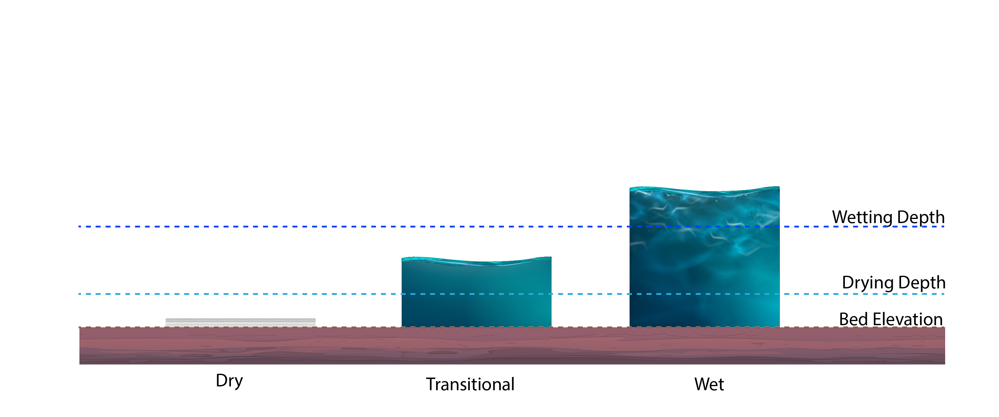
| Model Implementation | Description |
|---|---|
Sets depth constraints for switching off cell calculations in drying cells. |
| Command | Description |
|---|---|
Optional - Sets the cell wetting and drying depths used to switch off momentum and mass calculations in regions of shallow flow. |
5.8.3 Wetting And Drying
The below shows two examples for wetting and drying thresholds for metric and U.S. Customary units respectively.
Example (metric units).
! Wetting And Drying (Metric)
Cell Wet/Dry Depths == 0.0001, 0.05 ! {1.e-5} Dry depth (m), {1.e-2} Wet depth (m)Example (US customary units).
! Wetting And Drying (U.S. Customary)
Cell Wet/Dry Depths == 0.001, 0.1 ! {3.28e-5} Dry depth (ft), {3.28e-2} Wet depth (ft)5.9 Bottom Drag
5.9.1 Command Status
Required.
5.9.2 Description
Bottom roughness is modelled by setting the Bottom Drag Model command. Supported bottom drag model implementations are summarised in Table 5.14, with links to the relevant implementation sections below. Commands are listed in Table 5.15. Roughness values are defined globally using the Global Bottom Roughness command. Global values are typically overridden locally through use of material specific values (Section 5.14.2).
Bottom drag model science is provided in Section B.4.8.4.
| Command | Description |
|---|---|
Required - Sets the bottom drag model for bed friction calculations. |
|
Required - Sets the default global Manning’s ‘n’ coefficient or Nikuradse roughness length. |
5.9.3 Manning
This model represents bottom roughness through the use of the Manning’s equation and is the default bed roughness model. It requires the spatial definition of Manning’s ‘n’ roughness coefficients.
! Manning Bottom Drag Model
Bottom Drag Model == Manning ! {Manning} | ks
Global Bottom Roughness == 0.03 ! {1.0E-6} Manning's 'n'5.9.4 ks
This model implements a log-law velocity profile model. It requires the spatial definition of Nikuradse roughness length scale (ks) values.
! ks Bottom Drag Model (Metric Units)
Bottom Drag Model == ks ! {Manning} | ks
Global Bottom Roughness == 0.1 ! {1.0E-6} Nikuradse roughness length (m)Example (ks model, US customary units).
! ks Bottom Drag Model (US Customary Units)
Bottom Drag Model == ks ! {Manning} | ks
Global Bed Roughness == 0.3 ! {1.0E-6} Nikuradse roughness length (ft)5.10 Horizontal Mixing
5.10.1 Command Status
Required.
5.10.2 Description
Horizontal turbulent mixing is specified for the entire model domain by using the Momentum Mixing Model command and two ‘Global’ commands in combination. Supported momentum mixing model implementations are summarised in Table 5.16, with links to the relevant implementation sections below. Commands are listed in Table 5.17. Global commands set parameters that are spatially constant over the entire model domain. For momentum mixing this may be a spatially constant coefficient or eddy viscosity value depending on the selection of the Momentum Mixing Model command. Global values can be overridden locally through use of material specific values (Section 5.14).
Horizontal momentum mixing model science is provided in Section B.7.
| Model Implementation | Description |
|---|---|
No horizontal momentum mixing. |
|
Spatially constant momentum mixing value. |
|
Smagorinsky turbulence closure for momentum mixing. |
|
Wu momentum mixing formulation. |
| Command | Description |
|---|---|
Required - Selects the momentum mixing model for horizontal sub-grid scale turbulent mixing. |
|
Conditional - Required when using the Constant, Smagorinsky or Wu Momentum Mixing Model. Assigns the eddy viscosity coefficient or constant value. |
|
Optional - Sets a minimum and maximum limit on computed eddy viscosity when using the Smagorinsky or Wu Momentum Mixing Model. |
5.10.3 None
This model is the default and excludes the simulation of momentum mixing. Using none is useful for analytical cases and laboratory experiments. It is not recommended for project modelling and an alternative momentum mixing model implementation should be adopted.
! Momentum Mixing Disabled
Momentum Mixing Model == None ! {None} | Constant | Smagorinsky | Wu5.10.4 Constant
This model applies a spatially constant eddy viscosity value to all cells in the model domain.
! Constant Model
Momentum Mixing Model == Constant ! {None} | Constant | Smagorinsky | Wu
Global Horizontal Eddy Viscosity == 1.0 ! {0.0} Eddy viscosity (m2/s)5.10.5 Smagorinsky
This model calculates eddy viscosity on a cell by cell basis using local horizontal velocity gradients and cell size. This method is recommended for ocean, coastal, estuarine and lake studies or for models that are likely to be extended to 3D hydrodynamics during a project. The argument to the command Global Horizontal Eddy Viscosity is interpreted as the Smagorinsky coefficient in this model.
! Smagorinsky Model
Momentum Mixing Model == Smagorinsky ! {None} | Constant | Smagorinsky | Wu
Global Horizontal Eddy Viscosity == 0.5 ! {0.0} Smagorinksy coefficient
Global Horizontal Eddy Viscosity Limits == 0.05, 99999. ! {0.0} Minimum eddy viscosity (m2/s), {99999.} Maximum eddy viscosity (m2/s)5.10.6 Wu
This model calculates eddy viscosity on a cell by cell basis using local velocity gradients and water depth. Wu is recommended for 2D only simulations in riverine and floodplain areas where cell size can become small relative to the water depth. The argument to the command Global Horizontal Eddy Viscosity is interpreted as the Wu coefficient in this model.
! Wu Model
Momentum Mixing Model == Wu ! {None} | Constant | Smagorinsky | Wu
Global Horizontal Eddy Viscosity == 4.0 ! {0.0} Wu coefficient
Global Horizontal Eddy Viscosity Limits == 0.05, 99999. ! {0.0} Minimum eddy viscosity (m2/s), {99999.} Maximum eddy viscosity (m2/s)5.11 Wind Stress
5.11.1 Command Status
Optional.
5.11.2 Description
Wind stress may be applied as a surface forcing term when wind boundary conditions such as CYC_HOLLAND, W10 or W10_GRID are specified. The Wind Stress Model command selects the wind stress parameterisation. Supported wind stress model implementations are summarised in Table 5.18, with links to the relevant implementation sections below. Commands are listed in Table 5.19. Associated drag coefficients depend on the selected model and may be defined as a wind speed dependent transfer coefficient or a constant bulk coefficient. Default parameter values are applied where optional inputs are not specified.
Wind stress model science is provided in Section B.9.
| Command | Description |
|---|---|
Optional - Selects the wind stress parameterisation. Options are 1 (Wu), 2 (Constant) or 3 (Kondo). Default: 1 (Wu). |
|
Conditional - Inputs are dependent on the Wind Stress Model command. Can be used to update the default coefficients for the Wu and Kondo Wind Stress Models. |
|
Optional - Specifies the constant bulk momentum transfer coefficient |
5.11.3 Wu
The Wu wind stress model is the default. Wind stress is scaled using a wind speed dependent transfer coefficient defined by the Wind Stress Parameters command (Equation B.111). This parameterisation applies a piecewise-linear approximation of the transfer coefficient as a function of wind speed. Typical coefficient values are provided if no user values are specified.
! Wu Wind Stress Model
Wind Stress Model == 1 ! {1 Wu} | 2 Constant | 3 Kondo
Wind Stress Parameters == 0.0,0.0008,50.0,0.00405 ! {0.0} Wa (m/s) , {0.0008} Ca (-), {50.0} Wb (m/s), {0.00405} Cb (-)5.11.4 Constant
The Constant wind stress model uses a spatially constant bulk momentum transfer coefficient to compute wind stress. The coefficient is specified using the Bulk Momentum Transfer Coefficient command.
! Constant Wind Stress Model
Wind Stress Model == 2 ! {1 Wu} | 2 Constant | 3 Kondo
Bulk Momentum Transfer Coefficient == 0.0013 ! {0.0013} CDN (-)5.11.5 Kondo
The Kondo wind stress model calculates the bulk momentum transfer coefficient internally using an empirical formulation based on wind speed (Equation B.114). A user specified scale factor may optionally be applied using the Wind Stress Parameters command to adjust the magnitude of the calculated coefficient.
! Kondo Wind Stress Model
Wind Stress Model == 3 ! {1 Wu} | 2 Constant | 3 Kondo
Wind Stress Parameters == 1.0 ! {1.0} Scale factor (-)5.12 Computational Mesh
5.12.1 Command Status
Required.
5.12.2 Description
The computational mesh defines the horizontal spatial discretisation of the model domain and forms the geometric basis for all calculations in TUFLOW FV. Supported computational mesh model implementations are summarised in Table 5.20, with links to the relevant implementation sections below. The required commands for these implementations are summarised in Table 5.21. The following two mesh types are supported and the user is required to select one method or the other.
| Model Implementation | Description |
|---|---|
Unstructured mesh implementation. |
|
Structured mesh implementation. |
| Command | Description |
|---|---|
Conditional - Required if using an unstructured computatoinal mesh. Reads the mesh topology from a .2dm unstructured mesh file. This mesh may contain triangles, quadrilaterals, or a combination of these geometries. The mesh may also contain bathymetry and material information. Only one Geometry 2d command and mesh should be used per simulation. |
|
Conditional - Required if using a structured mesh. X and Y coordinate of the grid origin. |
|
Conditional - Required if using a structured mesh. The model cell size which can be independent in the X and Y directions. |
|
Conditional - Required if using a structured mesh. The length of the X and Y grid axis. |
|
Optional - Structured grid rotation angle. |
5.12.3 Unstructured Mesh
This is the usual mesh type used for TUFLOW FV modelling. TUFLOW FV supports unstructured meshes generated in the Aquaveo SMS .2dm file format. Unstructured meshes (also commonly referred to as flexible meshes) are typically used to represent complex geometries such as estuaries, rivers and coastal systems such as the mesh shown in Figure 5.2.

Detailed instructions on how to generate unstructured meshes are provided in TUFLOW FV’s Tutorial Modules. The tutorials range in complexity, and provide general guidance on meshing with links to educational meshing resources. It is strongly recommended that these tutorials be reviewed.
Unstructured meshes are read using the Geometry 2D commands listed in Table 5.21.
! Unstructured Mesh
Geometry 2D == ..\model\geo\MB_001.2dm5.12.4 Structured Mesh
Structured rectangular meshes, with or without rotation, are defined using the set of commands listed in Table 5.21. These meshes are useful for doing direct comparisons with other regular grid models or laboratory tests.
The Grid Rotation command defines the structured mesh rotation angle in degrees positive from East, consistent with the convention shown in Figure 5.3. The Grid Size command defines the total grid distance in the X and Y directions.

Structured Mesh
The below example shows the development of a 20 m resolution cartesian model. The resultant mesh is shown in Figure 5.4
! Regular grid definition
Grid Origin == 548225, 7015813 ! X origin, Y origin (m, ft or decimal degrees)
Grid Rotation == 20. ! Rotation of x axis (degrees anti-clockwise from east)
Cell Size == 100., 100. ! Cell size x, Cell size y (m, ft or decimal degrees)
Grid Size == 1000., 1000. ! Grid size x, Grid size y (m, ft or decimal degrees)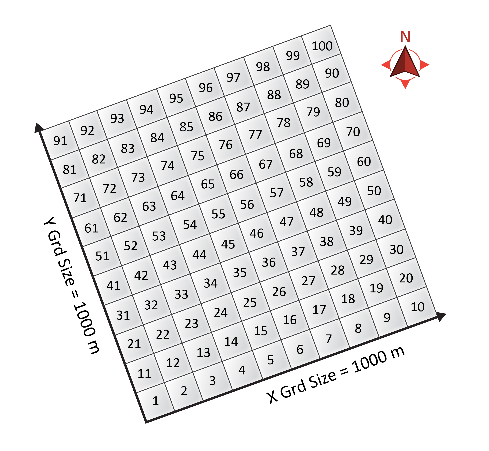
5.13 Bathymetry
5.13.1 Command Status
Conditional
Static bathymetry commands are optional if using an unstructured computational mesh.
Static bathymetry commands are required if using a structured computational mesh.
Time varying bathymetry commands are optional for either computational mesh type.
5.13.2 Description
Supported bathymetry model implementations are summarised in Table 5.22, with links to the relevant implementation sections below.
| Model Implementation | Description |
|---|---|
Static bathymetry assignment and layering approaches. This is bathymetry that does not change as a function of time during a simulation. |
|
Time varying bathymetry implementation. Can be used to model levee breaches, rudiemtary scour or earthworks. |
5.13.3 Static Bathymetry
TUFLOW FV supports the assignment of static model bathymetry using a range of input formats, including unstructured mesh files (.2dm), Triangulated Irregular Networks (TINs), Digital Elevation Models (DEMs) and GIS vector layers. These datasets are used to define elevations across the model domain, enforce bathymetric breaklines and assign elevation values to specified spatial regions.
The workflow used to apply bathymetry depends on the mesh type. For structured meshes (Section 5.12.4), at least one static bathymetry command is required to define bed elevations. For unstructured meshes (Section 5.12.3) bathymetry is initially provided through the .2dm mesh file. This base .2dm bathymetry can then be optionally updated or replaced using the static bathymetry commands described in the following sections.
When using unstructured meshes it is generally preferable to disregard the bathymetry stored within the .2dm file and instead define bathymetry directly within the TUFLOW FV control file using external datasets. The reasons for this are as follows.
- The .2dm file contains both the mesh topology and a vertex based bathymetry dataset. Because the bathymetry is stored at mesh vertices it is inherently dependent on the mesh geometry. Any modification to the mesh topology requires the bathymetry to be regenerated
- During model initialisation, TUFLOW FV averages vertex elevations from the .2dm file to cell centred bathymetry values. This can lead to smoothing of narrow channels, banks, levees or other small scale features. For applications with relatively uniform bed levels, such as large lakes or offshore domains, this behaviour may be acceptable and the user can use the .2dm alone to define the bathymetry. For applications requiring accurate representation of fine bathymetric detail it is recommended to use bathymetric update commands
The recommended workflow to apply model bathymetry is as follows.
- The unstructured mesh is read from the .2dm file. The associated bathymetry is loaded by default during this step
- The initial bathymetry from Step 1 is disregarded by applying a global default bathymetry value (Section 5.13.3.2)
- Detailed bathymetric data are assigned using spatially varying datasets such as DEMs (Section 5.13.3.3) or TINs (Section 5.13.3.4). These commands interpolate elevations directly to cell centres and are mesh independent
- The base bathymetry established in the previous step can be locally modified to represent hydraulic controls or design features. For example using breaklines to define channel thalwegs, embankment crests, levees or other linear structures (Section 5.13.3.5) or to incorporate proposed earthworks, cut and fill operations
The static bathymetry command implementations listed in Table 5.23 are described in the sub sections that follow.
| Command | Description |
|---|---|
Optional - Sets all elevations in the domain to a user specified value (Section 5.13.3.2). |
|
Optional - Updates cell centre elevations via a Digital Elevation Model (DEM) file (Section 5.13.3.3). |
|
Optional - Updates selected cell centre elevations via a Triangulated Irregular Network (TIN) file (Section 5.13.3.4). |
|
Optional - Reads GIS files that can contain polylines, points and/or polygons. Points and polylines are treated as breaklines in the model’s bathymetry (Section 5.13.3.5). The breakline can vary in height along its length (i.e. a 3D breakline). Polygon features set a user-specified z elevation that updates any cell centroids located within the polygon extent (Section 5.13.3.6). |
|
Optional - CSV file that updates cell centre elevations. Can be assigned using (ID, Z) or (X,Y,Z) coordinates (Section 5.13.3.7). |
|
Optional - Sets a spatially constant lower limit (zbmin) and upper limit (zbmax) to the model bathymetry. Model elevations below zbmin will be set to zbmin and likewise model elevations will be set to zbmax. This command is executed after all other bathymetry commands and will overwrite any preceeding bathymetry below or above the zbmin or zbmax values (Section 5.13.3.8). |
5.13.3.1 Static Bathymetry Layering
Static bathymetry commands can be applied individually or in combination, with TUFLOW FV input data layering determining the final bathymetric surface. This section provides an example of command layering for a proposed port upgrade where the model bathymetry is constructed using a series of topographic and bathymetric layers (see Figure 5.5).
- A default land elevation value of 10 m is set. As this is a coastal project, this value is well above the highest water level expected during the analysis. This default is set to ensure any missing data values in the GIS are filled in and can be easily identified.
- A TIN of bathymetric sounding data is used to define the existing ocean bathymetry, pre development.
- LiDAR derived survey is used to define the ‘base’ bathymetry for overland areas, pre development.
- The design TIN earthworks of the proposed port development are ‘stamped’ onto the existing ‘base’ bathymetry.
- Use a combination of polyline and point breakline layers to enforce the low chord of an approach channel within the proposed port development extent

The corresponding TUFLOW FV command syntax is provided below.
! Overwrite .2dm Bathymetry with Updates
Set Zpts == 10.0 ! Set a default land value
Read TIN Zpts == ..\model\geo\Bathy_Survey_202011.tin ! Ocean bathy survey
Read GRID Zpts == ..\model\geo\Lidar_5m_202306.flt ! 5m LiDAR over land areas
Read TIN Zpts == ..\model\geo\Design_OPT_001.tin ! TIN concept design earthworks
Read GIS Z Line == ..\model\gis\2d_zln_CB_001_L.shp | ..\model\gis\2d_zln_CB_001_P.shp ! Enforce channel low chordThe final bathymetry used by the simulation can be reviewed within the _mesh_check_R file if Write Check Files has been set. Each of the commands used in the example above are described in the following sections.
5.13.3.2 Spatially Constant
A spatially constant single elevation can be set for the model domain using the Set Zpts command. This command can be used to assign a land or default bathymetry value prior to applying detailed spatial data.
! Set all elevations in the model to 10.0 mRL
Set Zpts == 10.0 ! {no default} Elevation (mRL of ftRL)5.13.3.3 Direct Reading Of DEM Grids
The Read GRID Zpts command interpolates elevation values from an ESRI ASCII (.asc) or binary (.flt) grid to mesh cell centroids, using bilinear interpolation. Only cells within the spatial extent of the grid are updated. If a cell falls within the grid extent but corresponds to a null value (e.g. a NoData cell in the DEM) its elevation is not modified.
! Interpolate elevations from DEM
Read GRID Zpts == ..\model\geo\LiDAR_5m_202306.asc ! {no default} DEM file path (mRL of ftRL)5.13.3.4 Direct Reading Of TINs
Bathymetry can be assigned using TINs through the Read TIN Zpts command. This command supports TINs in the Aquaveo SMS .tin file format. Elevations are assigned to mesh cell centres within the TIN’s spatial extent using bilinear interpolation.
! Interpolate elevations from TIN
Read TIN Zpts == ..\model\geo\Bathy_Survey_202011.tin ! {no default} TIN file path (mRL of ftRL)5.13.3.5 Breakline Layers
The Read GIS Z Line command updates cell elevations along a breakline using a combination of GIS polyline and point layers. The breakline can vary in height along its length (i.e. a 3D breakline) if the points are snapped to polyline vertices. Linear interpolation is used to update cell centroid values between user specified elevation points.
Figure 5.6 shows an example using breaklines layers to enforce the bathymetry of a design bund. In the left pane a breakline polyline (black dash) has been digitised with elevation points (red circles) snapped to the start, middle and end polyline vertices with elevations -0.2, 1.0 and 0.5 m respectively. During model start up cell elevations are linearly interpolated along the polyline resulting in the cell centre elevation updates indicated by the pink triangles with red labels in the right image.


The template GIS layers required to define breaklines, prefixed with ‘2d_zln_’ are generated during model initialisation (Section 5.2). Multiple geometry types are supported and are indicated by the following suffixes:
_P for point features (e.g., 2d_zln_M03_002_P.shp)
_L for line features (e.g., 2d_zln_M03_002_L.shp)
‘2d_zln_’ layers require the assignment of a single ‘Elevation’ attribute as shown in Table 5.24.
| Attribute Name(s) | Description | Type |
|---|---|---|
Elevation |
Elevation of the feature relative to the model’s vertical datum. |
Float |
When specifying Read GIS Z Line, point and polyline layers are associated by using the vertical bar syntax (|). Up to nine point layers can be specified per command line.
! Enforce road centreline
Read GIS Z Line == ..\model\gis\2d_zln_M03_002_L.shp | ..\model\gis\2d_zln_M03_002_P.shp ! {no default} GIS layer file path(s)Multiple point files may be included but must not appear as the first entry in the list.
! Enforce road centreline Using multiple points files
Read GIS Z Line == ..\model\gis\2d_zln_M03_002_L.shp | ..\model\gis\2d_zln_M03_002_P.shp | ..\model\gis\2d_zln_M03_003_P.shp ! {no default} GIS layer file path(s)If using MapInfo .mif files, point and polyline geometries can be contained in a single .mif file if preferred.
! Enforce road centreline - Mapinfo
Read GIS Z Line == ..\model\gis\2d_zln_M03_001.mif ! {no default} GIS layer file pathModified cell centre elevations are output to the 2d_zln_zpt_check layer if Write Check Files has been set.
5.13.3.6 Polygon Layers
GIS polygon layers can be used to set a spatially constant elevation for any cell centroids located within a polygon’s extent using the Read GIS Z Line command.
The template GIS layers required to define elevation polygons, prefixed with ‘2d_zln_’ are generated during model initialisation (Section 5.2). For example:
- _R for polygon features (e.g., 2d_zln_Reclaimation_001_R.shp)
‘2d_zln_’ layers require the assignment of a single ‘Elevation’ attribute (see Table 5.24). An example syntax block is provided as follows.
! Enforce fill elevation
Read GIS Z Line == ..\model\gis\2d_zln_Reclaimation_001_R.shp ! {no default} GIS layer file pathA polygon (blue hatching in Figure 5.7) can be used to enforce the infill area associated with a proposed development. Cell centre values updated by the polygon can be visualised in GIS using the 2d_zln_zpt_check layer (see Section 5.18.11). The pink triangles indicate that bathymetry has been raised to 2 mRL. The symbology is the default styling applied using the TUFLOW Plugin for QGIS for check file layers.
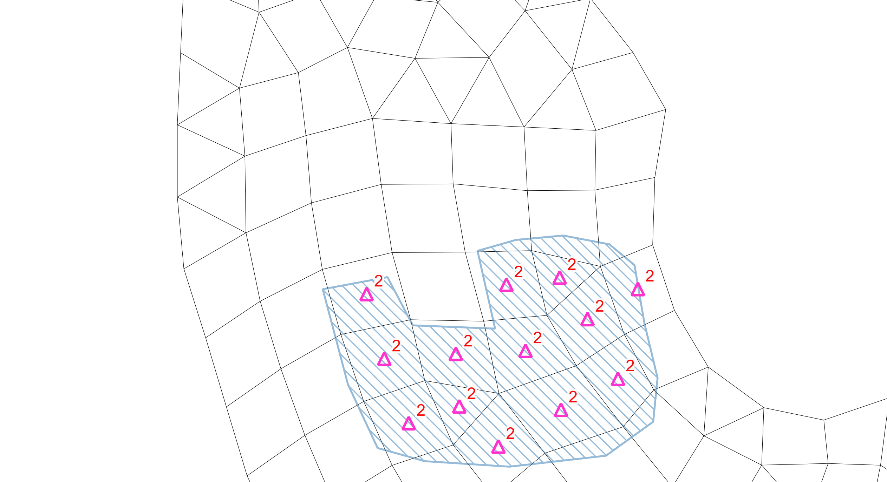
5.13.3.7 Preprocessed Cell Elevations
This method can be used in preference to the commands mentioned above if model startup times are prohibitively slow. Unlike other bathymetric assignment methods, cell ID referencing does not require interpolation enabling near instantaneous bathymetry assignment during model start up. However, this approach is mesh specific and requires preprocessing prior to running a TUFLOW FV simulation. If the mesh is modified, a new cell elevation file must be generated. Due to its dependence on the mesh structure, this method is recommended only if minimising model initialisation time is a priority.
The Cell Elevation File command assigns bathymetry values directly to mesh cells by referencing cell IDs or by specifying x,y,z coordinates that fall within individual cells.
! Cell Elevation File
Cell Elevation File == ..\model\geo\OC_001_CC_Inspect_ID.csv, Cell_ID ! {no default} File path, {CELL_ID} | CoordinateExample subset of an input files using Cell_ID referencing.
OC_001_CC_Inspect_ID.csv - Total file size 22350 cells
ID, Z
1, -5.2
2, -8.3
..., ...
..., ...
22350, 3.3Example subset of an input files using Coordinate referencing.
OC_001_CC_Inspect_XYZ.csv - Total file size 22350 cells
X, Y, Z
156.01842, -10.01357, -5.2
156.04195, -10.02864, -8.3
...,...,...
...,...,...
156.23608, -10.19135, 3.35.13.3.8 Bed Elevation Limits
The Global Bed Elevation Limits command sets a lower limit (zbmin) and upper limit (zbmax) to the model bathymetry. Model elevations below zbmin will be set to zbmin, and likewise model elevations will be set to zbmax. This command is executed after all bathymetry commands regardless of where it occurs in the .fvc file.
Global bed elevation limit values can be overridden locally through use of material specific values (Section 5.14).
! Set all bathymetry below -100 mRL to -100 mRL
Global Bed Elevation Limits == -100, 99999 ! {-9.99E+09} zbmin (mRL or ftRL), {9.99E+09} zbmax (mRL or ftRL)5.13.4 Time Varying Bathymetry
TUFLOW FV supports the specification of bathymetry that changes during the simulation using a set of time varying structure commands. These allow localised adjustments to bed elevation based on a prescribed time series, model sampled parameters (e.g. flow or level) or a combination of digital elevation model (DEM) surfaces and control rules. Common applications include the representation of levee breaches, sandbar migration or event driven scouring and deposition.
Time varying bathymetry is configured using TUFLOW FV’s hydraulic structure block functionality and thus is not repeated here (see Section 5.17.10).
5.14 Materials
5.14.1 Command Status
Required.
5.14.2 Description
Cell materials are used to define the spatial distribution of hydraulic and bed properties such as bottom roughness or horizontal eddy viscosity. The process to assign model materials is outlined as follows.
- Set a spatially constant default material for the model domain
- Optionally define spatially varying materials using GIS vector layers
- Define material blocks for each material defined in Steps 1 and 2 that link the spatial location of materials with hydraulic and bed properties
If an unstructured mesh is used (Section 5.12.3), material data sourced directly from the .2dm may be used and Steps 1 and 2 above can be ignored. However, due to the dependence on mesh topology it is recommended that .2dm materials be overridden using mesh independent TUFLOW FV material spatial layering commands. If a structured mesh is used material spatial layering commands are required.
Supported material model implementations are summarised in Table 5.25, with links to the relevant implementation sections below. Material commands are provided in Table 5.26. Example syntax for spatially defining materials and material properties are provided in the following sections.
Spatial material commands follow TUFLOW’s command layering approach, as described for bathymetry (Section 5.13.3.1). The final material set used by the simulation can be reviewed within the _mesh_check_R file if Write Check Files has been set.
| Model Implementation | Description |
|---|---|
Single material assignment across the domain. |
|
GIS based material mapping with one or more layers. |
| Command | Description |
|---|---|
Optional - Sets all material in the domain to a single user specified value. |
|
Optional - Spatially vary cell materials using a GIS layer of polygons. |
|
Required - Instantiates a material block for a given material ID. |
|
Optional - Assigns a material specific bottom roughness. Overrides the Global Bottom Roughness. |
|
Optional - Assigns material specific horizontal eddy viscosity value or coefficient. Overrides the Global Horizontal Eddy Viscosity command. |
|
Optional - Assigns material specific horizontal eddy viscosity limits. Overrides the Global Horizontal Eddy Viscosity Limits command. |
|
Optional - Assigns material specific bed elevation limits. Overrides the Global Bed Elevation Limits command. |
|
Optional - Used to revert an area to first order calculations where the model is otherwise a second order model. If a first order model is being used then this flag will have no effect. |
|
Required - Closes the material block. |
Figure 5.8 shows the use of spatially varying material polygons to define the landcover and instream bed type for a coastal estuary analysis. The polygons are coloured according to the material ID assigned to each polygon which is labelled for each polygon.
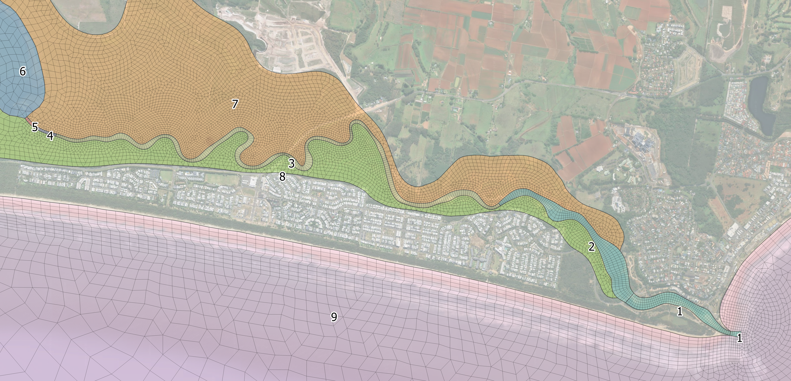
5.14.2.1 Material Properties
Material properties are specified within a material block. Material blocks begins with the Material command and end with End Material. Each material ID used in the model must be referenced in a material block. A single block can reference multiple material IDs for example Materal == 1,2,3. Multiple material properties commands (e.g. bottom roughness, horizontal eddy viscosity, bed elevation limits etc.) can be used within a single material block.
Example material blocks are provided as follows.
Bottom Roughness
This example shows a global bottom roughness that is modified locally by three materials.
! Global Settings - ks Bottom Drag Model
Bottom Drag Model == ks ! {Manning} | ks
Global Bottom Roughness == 0.10 ! {1.0E-6} Nikuradse roughness length (m)
! Local Materials
! Sandy Bed
Material == 10 ! {0} Material ID
Bottom Roughness == 0.05 ! {Global value} Nikuradse roughness length (m)
End Material
! Overbank
Material == 2 ! {0} Material ID
Bottom Roughness == 0.15 ! {Global value} Nikuradse roughness length (m)
End Material
! Reeds
Material == 8 ! {0} Material ID
Bottom Roughness == 0.25 ! {Global value} Nikuradse roughness length (m)
End MaterialThis example shows a global bottom roughness that is locally modified within materials 3 and 4 using the same material block.
! Global Settings - Manning Bottom Drag Model
Bottom Drag Model == Manning ! {Manning} | ks
Global Bottom Roughness == 0.04 ! {1.0E-6} Manning's n roughness (s / m^1/3)
! Material block
! Riparian veg
Material == 3,4 ! {0} Material ID - two material IDs referenced
Bottom Roughness == 0.08 ! {Global value} Manning's n roughness (s / m^1/3)
End MaterialHorizontal Eddy Viscosity
This example shows material specific updates of eddy viscosity coefficients and limits.
! Locally Increase Horizontal Eddy Viscosity
Material == 11 ! {0} Material ID
Horizontal Eddy Viscosity == 1.0 ! {Global value} Smagorinksy coefficient
Horizontal Eddy Viscosity Limits == 100., 99999. ! {Global value} Minimum eddy viscosity (m2/s), {Global value} Maximum eddy viscosity (m2/s)
End MaterialBed Elevation Limits
This example shows how bathymetry can be locally updated using a material block. Any bathymetry above -10 mRL is set to -10 mRL. The value -99999. is used to define a lower limit that will never be reached in practice. This means elevations below -10 mRL are not modified. Specifying -99999. is therefore equivalent to applying no truncation to bathymetry below -10 mRL.
! Local Overrides
! Truncate below -10 mRL
Material == 11 ! {0} Material ID
Bed Elevation Limits == -99999., -10. ! {Global value} zbmin (mRL or ftRL), {Global value} zbmax (mRL or ftRL)
End MaterialMaterial Block With Multiple Properties
This example shows multiple bed properties being updated within a single material block.
! Multiple Material Properties
! Local Materials
! Sandy Bed
Material == 10 ! {0} Material ID
Bottom Roughness == 0.05 ! {Global value} Nikuradse roughness length (m)
Bed Elevation Limits == -10, 9999 ! {Global value} zbmin (mRL or ftRL), {Global value} zbmax (mRL or ftRL)
End Material5.14.3 Spatially Constant
The Set Mat command is used to set a spatially constant material ID. This is typically used to define the default landcover type.
! Spatially constant material ID
Set Mat == 1 ! {0} Material ID5.14.4 Spatially Varying
GIS polygon layers can be used to set a the material ID for any cell centroids located within the polygon’s extent using the Read GIS Mat command.
During model initialisation (Section 5.2), template layers prefixed with ‘2d_mat_’ are generated for use in defining materials. ‘2d_mat_’ layers require the assignment of a single ‘MATERIAL’ attribute as shown in Table 5.27.
| Attribute Name | Description | Type |
|---|---|---|
Material |
Cell Material ID |
Integer |
! Spatially varying material definition
Read GIS Mat == ..\model\gis\2d_mat_BedMapping_001_R.shp ! Materials for offshore
Read GIS Mat == ..\model\gis\2d_mat_GovLanduse_001_R.shp ! Overland landuse mapping
Read GIS Mat == ..\model\gis\2d_mat_Design_OPT_001_R.shp ! Design channel bed type5.15 Initial Conditions
5.15.1 Command Status
Optional - If no initial conditions are user specified TUFLOW FV will automatically set the initial water level at each cell to the maximum of the bathymetry level, or datum level 0.0 (m or ft). Velocities are set to a default value of 0.0 (m/s or ft/s).
5.15.2 Description
Initial conditions set the starting state values of every cell within the model. Initial conditions can be specified as spatially constant or varying, and a restart file created from a previous model run can be deployed. Supported initial condition model implementations are summarised in Table 5.28, with links to the relevant implementation sections below. Initial condition commands for the 2D HD simulation class are provided in Table 5.29.
Initial condition and restart commands adhere to the command layering approach, akin to that described in Section 5.13.3.1.
| Model Implementation | Description |
|---|---|
Domain wide constant initial conditions. |
|
Spatially varying initial conditions from input files. |
|
Initialise from an existing restart file. |
| Command | Description |
|---|---|
Optional - Sets the initial water level to a global user specified value. |
|
Optional - File path to initial condition 2d csv file. Allows for user specified spatially varying water level and velocity initial conditions. |
|
Optional - Load the simulation initial conditions from a restart file (.rst) generated by a previous TUFLOW FV simulation. |
|
Optional - Switch to choose whether to use the timestamp written to the restart file (.rst) or to use the simulation start time. |
5.15.3 Spatially Constant
This implementation type is used to set a constant Initial Water Level in the model. The command will set the specified initial water level at any 2D cells with bed elevations lower than the initial water level.
! Set Global Initial Water Level
Initial Water Level == -0.1 ! {0.0} Water surface elevation (m)5.15.4 Spatially Varying
This initial condition implementation uses a csv file to specify initial water levels and velocities at specific 2D cells. It can be used for all 2D cells, or for specific local features. An example of using an Initial Condition 2D command to set a separate level of 1.1m in a lake that locally overrides a -0.1 m spatially constant initial water level is provided as follows.
! Combination of Global and Spatially Varying
Initial Water Level == -0.1 ! {0.0} Water surface elevation (m)
Initial Condition 2D == ..\model\bc_dbase\IC_Midnight_Lake_001.csv ! 2D IC filepath. Begin lake at 1.1 mExample initial condition 2D file.
IC_Midnight_Lake_001.csv - This lake resides over six TUFLOW FV cells
ID, WL, U, V
23, 1.1, 0.0, 0.0
28, 1.1, 0.0, 0.0
29, 1.1, 0.0, 0.0
42, 1.1, 0.0, 0.0
45, 1.1, 0.0, 0.0
46, 1.1, 0.0, 0.05.15.5 Restart File
This section describes the reading of restart files for initial conditions. For instructions on the writing of restart files refer to Section 5.18.10.
Restart files also referred to as hotstart files are generated by TUFLOW FV to save model variables such as depth and momentum at a specific instant in time from a previous simulation. A restart file can be read as the initial condition for a subsequent simulation allowing the model to begin from previously computed results. Because the restart file is created from an earlier simulation the model mesh and bathymetry must be identical between the simulation writing the restart file and the simulation reading it.
The default behaviour is for the restarted model to start from the time saved within the restart file. This can be optionally overridden using the Use Restart File Time command.
The example below shows the reading of a restart file generated from a one month warmup simulation FR_20221201_20230101_001.fvc. This command starts the current simulation on 1 January 2023 using depth and momentum fields that have developed during the preceding month.
! Read Restart File
Restart File == ./log/FR_20221201_20230101_001.rst5.16 Boundary Conditions
5.16.1 Command Status
Required.
5.16.2 Description
This section describes how boundary conditions are configured within the 2D HD simulation class. It outlines the available boundary model implementations, explains how boundary locations are spatially defined and details the structure and configuration of boundary condition blocks used to assign input data. TUFLOW FV syntax examples are provided for each boundary type.
Boundary conditions in TUFLOW FV are assigned using the following workflow.
- Select a boundary condition model implementation for the modelling use case. For example inflow/outflow to add or remove flow from the model, water level for astronomical tide boundaries or wind and pressure atmospheric boundaries (Section 5.16.2.1)
- Define the boundary location for the specific boundary type (Section 5.16.2.2)
- Configure the boundary with a boundary condition block and assign the required input data (Section 5.16.2.3)
Each step is described in the following sub-sections.
5.16.2.1 Step 1: Boundary Model Implementations
This guides the selection of the appropriate boundary model implementation based on the physical process to be represented.
Table 5.30 summarises the available implementations and provides example applications. The links in the Model Implementation column direct the reader to dedicated sections describing configuration options and TUFLOW FV syntax examples. This table is not the full list of boundary condition implementations available in TUFLOW FV, it is a sub-set relevant to the 2D HD simulation class.
| Model Implementation | Description |
|---|---|
Water level boundary conditions. Typically used to represent astronomical tide boundaries in coastal and estuarine or downstream tailwater levels in river simulations. |
|
Inflow or outflow boundary conditions. Used to include river and catchment inflows, outfalls or flow extractions. |
|
User specified or automatic relationship between water level and flow. Used to represent tailwater conditions in riverine models. |
|
Spatially constant or variable meteorological variables such as wind speed, mean sea level pressure, solar and terrestrial radiation, cloud cover, temperature, precipitation and relative humidity. These boundaries are typically driven using output from a meteorological/climate model such as ERA5, CFSv2, or ACCESS etc. Tropical cyclones can be modelled using the Holland Parametric Tropical Cyclone Model. |
|
Spectral wave model forcing such as wave radiation stress and wave transport. Used to include wave fields in the hydrodyanmic simulation. Can be uncoupled or coupled with a dynamic spectral wave model. |
|
Force vector boundary conditions. For example to include the influence of a jet, propeller wash or used in combination with an inflow/outflow boundary to assign flow momentum. |
|
Boundary types that allow for free-overflow, or reflective conditions at model edges. Typically used for laboratory comparisons or for boundaries not likely to influence the model solution at the area of interest. |
5.16.2.2 Step 2: Boundary Location Definition
In this step the selected boundary model implementation is assigned to specific spatial locations within the model domain.
Boundary locations are defined using one of the methods described in Table 5.31. The appropriate method depends on the boundary implementation selected. Examples of each location definition method are provided in the sub-sections that follow.
| Boundary Location Definition | Description |
|---|---|
Assigns a boundary condition to the cells along a nodestring(s) using the Read GIS Nodestring command. Used to represent open boundaries on the edge of the mesh. |
|
Boundary condition is applied to an individual model cell. Typically used for localised forcing such as point inflows or flow extractions. Locations are defined via the Read GIS SA command using point geometry. |
|
Boundary condition is distributed over multiple model cells within a polygon extent. Useful for spatially distributed forcing over specific user defined regions. Polygon locations are set via the Read GIS SA command using region (polygon) geometry. |
|
Applies the boundary condition to all cells in the model using a spatially constant value. Suitable for assigning rainfall, evaporation and other meteorological conditions for small model domains where spatial variation is boundary input is negligible. No location specification required. |
|
Boundary conditions are interpolated to the mesh from an input grid. Useful for assigning spatially and temporally varying boundary conditions for meteorological/oceanographic grids or diffusers/outfalls. The grid is defined using a TUFLOW FV Grid Definition Block, a series of related commands that set the grid geometry. |
|
Boundary conditions are applied to individual model cells along a moving path. Typically used for assigning inflows, masses, forces or turbulence to features that move during a simulation. For example a dredge hopper, tug boat or ship. Coordinates of the moving point path are provided within the BC Block input time series file. |
|
Boundary conditions are calculated at all model cells using the Holland Tropical Cyclone parametric wind speed and pressure model. Location is provided via coordinates of the tropical cyclone track within the BC Block input time series file. |
|
Boundary conditions are interpolated to the mesh from either an input grid(s) or a coupled spectral wave model. Specified using a TUFLOW FV Grid Definition Block for uncoupled simulation or by directly referencing a spectral wave model control file for coupled simulation. |
5.16.2.2.1 Polyline
Polyline boundaries are set using the Read GIS Nodestring command. During model initialisation (Section 5.2) template layers prefixed with ‘2d_ns_’ are created to support the digitisation of nodestring polylines. Geometry type is indicated by the ‘_L’ suffix for polyline features (e.g., 2d_ns_Ocean_001_L.shp). ‘2d_ns_’ layers require the assignment of two attributes as shown in Table 5.32.
When read by TUFLOW FV each polyline object is converted into a nodestring by snapping the polyline to the nearest cell faces along its path. The resulting nodestring cell face selections can be reviewed in the simulation output _ns_check_L and _bc_check_L layers if the Write Check Files command is enabled.
| Attribute Name(s) | Description | Type |
|---|---|---|
ID |
Unique identifier/name of the polyline |
Character |
Flags |
If set to ‘BD’ informs TUFLOW FV to project and snap the polyline onto the mesh boundary. If blank, select the cell faces closest to the polyline. |
Character |
For boundaries aligned with the edge of the model mesh the direction in which a polyline (nodestring) is digitised does not affect how the boundary condition is applied. However, the digitised direction does determine the sign convention assigned to model result outputs such as polyline fluxes (Section 5.18.5) and mass balance (Section 5.18.7). To ensure consistency with model outputs it is recommended to adopt the following digitising convention:
Catchment and estuary models: Digitise from right bank to left bank when looking downstream.
Coastal models: Digitise from right to left along the boundary when looking offshore (i.e. from land to sea).
For instance the nodestring shown in Figure 5.9 is digitised from south to north (right to left) when viewed offshore. This boundary has the ID “Ocean” and the flag “BD”. The polyline has been styled using the TUFLOW FV QGIS Plugin to show small arrows pointing offshore visually indicating the positive sign direction for fluxes across the nodestring.
! Polyline (Nodestring) Boundary Location Definition
Read GIS Nodestring == ..\model\gis\2d_ns_Ocean_001_L.shp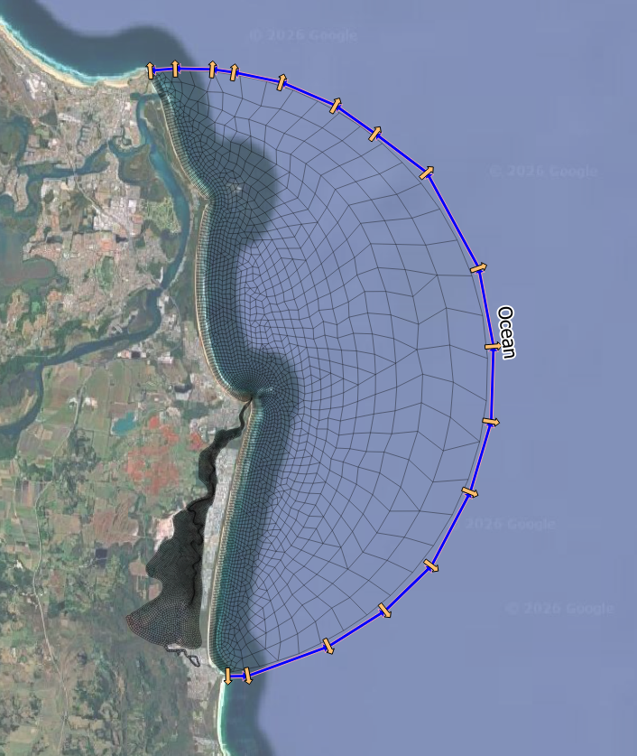
5.16.2.2.2 Point
Point boundaries are set using GIS point 2d_sa layers in combination with the Read GIS SA command. During model initialisation (Section 5.2) template layers prefixed with ‘2d_sa_’ are created to support the digitisation of boundary points. Geometry type is indicated by the ‘_P’ suffix for point features (e.g., 2d_sa_UrbanCatch_001_P.shp). ‘2d_sa_’ layers require the assignment of a single ‘Name’ attribute as shown in Table 5.33.
The cells selected can be reviewed in the simulation output _sa_check_P layer if the Write Check Files command is enabled.
| Attribute Name(s) | Description | Type |
|---|---|---|
Name |
Unique identifier/name of the boundary location. |
Character |
Figure 5.10 illustrates catchment inflows to a coastal estuary applied using the GIS layer 2d_sa_UrbanCatch_001_P.shp. This layer includes seven point locations where catchment inflow enters the estuary.
! Point Boundary Location Definition
Read GIS SA == ..\model\gis\2d_sa_UrbanCatch_001_P.shp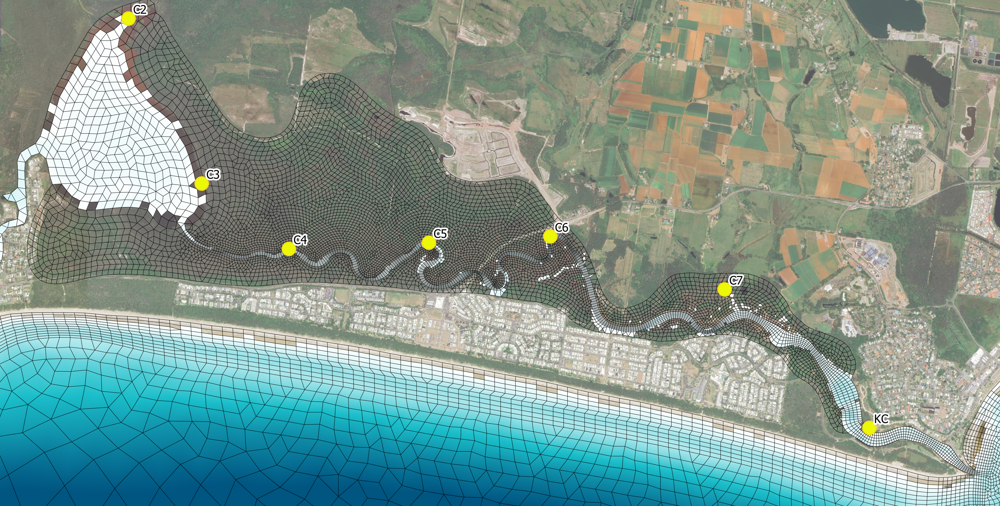
5.16.2.2.3 Polygon
Polygon boundary conditions are set using a combination of GIS region geometry type 2d_sa layers and the Read GIS SA command.
During model initialisation (Section 5.2) template layers prefixed with ‘2d_sa_’ are created to support the digitisation of boundary polygons. Geometry type is indicated by the ‘_R’ suffix for region features (e.g., 2d_sa_UrbanCatch_001_R.shp). ‘2d_sa_’ layers require the assignment of a single ‘Name’ attribute as shown in Table 5.33.
The cells selected can be reviewed in the simulation output _sa_check_P layer if the Write Check Files command is enabled.
Figure 5.11 illustrates the use of inflow polygons to distribute local catchment runoff across multiple model cells. The example shows two polygons from the layer 2d_sa_UrbanCatch_001_R.shp: ‘Park Treatment’ which selects ten model cells and ‘Carpark’ which selects six model cells. The flow is distributed among the selected cells weighted according to their respective cell areas.
! Polygon Boundary Location Definition
Read GIS SA == ..\model\gis\2d_sa_UrbanCatch_001_R.shp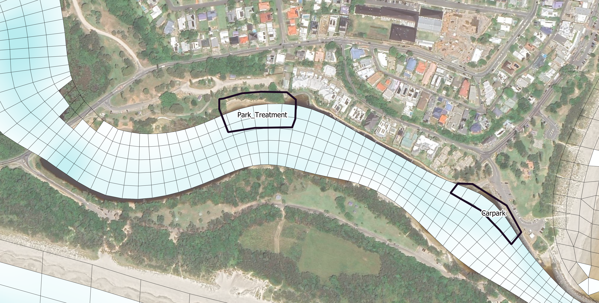
5.16.2.2.4 Global
Global boundary conditions apply a spatially constant condition to all model cells. No GIS or spatial input is required.
5.16.2.2.5 Grid
Grid definition blocks define the location of gridded boundary condition types. These definitions establish an interpolation mapping from the grid to the computational mesh.
Two grid definition types are available:
- Via an existing NetCDF file
- User (manually) defined
Available grid definition commands for the 2D HD simulation class are provided in Table 5.34.
| Command | Description |
|---|---|
Conditional - Required when using gridded boundary condition inputs (Grid Definition is a supported alternative). Opens a grid definition block. Specifies the NetCDF file containing coordinates for defining the grid used in gridded boundary condition types. The recommended option for setting the grid geometry. |
|
Conditional - Required when using gridded boundary condition input (Grid Definition File is a supported alternative). A user defined grid of coordinates used for gridded boundary condtion types. |
|
Conditional - Required if using Grid Definition or Grid Definition File. Assigns a name to the grid, allowing it to be referenced by multiple boundary conditions. |
|
Conditional - Required when using Grid Definition File. Specifies which variables should be read from the NetCDF to create the grid. |
|
Optional - Calculate interpolation weightings from the grid to the computational mesh. |
|
Optional - Use the grid extent as a mask to reduce the calculation footprint of boundary updates. For example, if the computational mesh contains 40,000 cells and the boundary grid extent is cooincident with 1,000 of the cells, only process the 1,000 cells when reading and updating model boundary data. |
|
Conditional - Required when using Grid Defintion or Grid Definition File. Closes the grid definition block. |
Examples for each grid definition type are provided below.
Grid Definition File
! Grid Boundary Location Definition
Grid Definition File == merge/CFSR_20230101_20230201_MGA56_UTC.nc ! Open grid definition block and reference file with grid coordinates
Grid Definition Variables == x, y ! The x and y coordinate variable names within the specified NetCDF file
Grid Definition Label == atmos ! Name of the grid
End Grid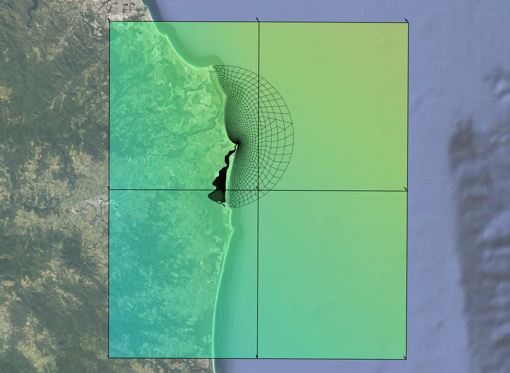
User Defined Grid Definition
As an alternative to setting the grid location via a NetCDF file, user defined 2D grids can be specified using the Grid Definition command. The required arguments are:
- x0: The grid x origin in meters, feet or decimal degrees
- y0: The grid y origin in meters, feet or decimal degrees
- alp: The grid rotation in degrees
- mx: The number of cells in the grid’s x direction
- my: The number of cells in the grid’s y direction
- dx: The cell size in the grid’s x direction in meters, feet, or decimal degrees
- dy: The cell size in the grid’s y direction in meters, feet, or decimal degrees
The rotation convention is as described in Figure 5.3.
! Grid Boundary Location Definition
Grid Definition == 158.5, -31.5, 0.0, 100, 50, 0.01, 0.01 ! x0, y0, alp, mx, my, dx, dy
Grid Definition Label == user_defined_ocean ! Name of the grid
End Grid5.16.2.2.6 Moving Point
Moving point boundary locations are defined via X and Y coordinates directly specified in the input boundary condition time series file. For example:
Time,X,Y,Flow
01/05/2011 23:00:00,159.07365,-31.35875,0.00
02/05/2011 00:00:00,159.07365,-31.35875,10.0
02/05/2011 03:00:00,159.07438,-31.36102,10.0
02/05/2011 06:00:00,159.07569,-31.36364,10.0
02/05/2011 09:00:00,159.07668,-31.36633,10.0
02/05/2011 12:00:00,159.07864,-31.36915,10.0
02/05/2011 15:00:00,159.08048,-31.37086,10.0
02/05/2011 18:00:00,159.08219,-31.37145,10.0
02/05/2011 21:00:00,159.08468,-31.37361,10.0
03/05/2011 00:00:00,159.08632,-31.37420,10.0

5.16.2.2.7 Tropical Cyclone
Tropical cyclone tracks are defined via X and Y coordinates directly specified in the input boundary condition time series file. For example:
Time,X,Y,P0,PA,RMAX,B,RHOA,KM,THETMAX,DELTAFM,Latitude,WBGX,WBGY
26/03/2010 16:30,137.756,-8.847,950,1010,50000,1.5,1.17,0.7,160,1,-8.847,0,0
01/04/2010 00:00,140.131,-14.741,950,1010,50000,1.5,1.17,0.7,160,1,-14.741,0,0
The configuration of tropical cyclone boundaries is described in Section 5.16.6.
5.16.2.2.8 Spectral Wave
Spectral wave boundary locations are specified using either:
- One or more grid definition blocks (using the same grid definitions described in Section 5.16.2.2.5) for uncoupled wave boundaries
- Using a configured two-way coupled spectral wave model
The configuration of wave model boundaries is described in Section 5.16.7.
5.16.2.3 Step 3: Boundary Condition Block
In this step the selected boundary model implementation and boundary location are linked to input data using a boundary condition block (BC block).
A TUFLOW FV boundary condition block referred to as a BC block defines a single boundary condition. Each boundary condition requires its own BC block and most simulations contain multiple BC blocks.
The general form of the BC block is:
! Conceptual boundary condition block form
BC == [boundary_type], [location_ID], [data_filepath]
[...BC_block_commands...]
End BCWhere:
- BC == indicates the instantiation of a boundary condition block
- boundary_type is a character flag setting the boundary condition type (e.g. Q, WL, QC_GRID)
- location_ID is a reference to the boundary location. For example the name of a polyline, point, polygon, grid or via directly specified coordinates within the data set by the data_filepath
- data_filepath is the file containing the boundary data, which is typically a time series file in CSV or NetCDF format
- BC_block_commands are any commands that reside within a boundary block. BC block commands provide configuration settings for the boundary including which data to select, whether any scaling or offset values are applied and how to handle missing data
- End BC closes the boundary condition block
This general form is used for the majority of boundary condition types. Where there are exceptions these are described in Section 5.16.3 to Section 5.16.9.
An example demonstrating the general form of the BC block is provided below.
- The boundary_type is set to WL, a spatially constant but temporally varying water level boundary
- The location_ID is ‘Ocean’. This is the user defined nodestring ID of a polyline feature digitised within the GIS layer 2d_ns_Ocean_001_L.shp
- The data_filepath is ..\bc_dbase\Tide_20230101_20240101.csv and contains the time series data
- The only BC_block_commands in this instance is the BC Header command, which references which columns in the csv file should be read to represent time and water level
! Read the location of the boundary
Read GIS Nodestring == ..\model\gis\2d_ns_Ocean_001_L.shp ! Offshore open boundary location, with one Polyline location_ID attributed as 'Ocean'
! Data Selection Using BC Header
BC == WL, Ocean, ..\bc_dbase\Tide_20230101_20240101.csv ! boundary_type, location_ID, data_filepath
BC Header == Time_UTC, Tide_mMSL ! {TIME}, {WL} (mRL or ftRL) (Required data headers for the WL boundary type)
End BC| Command | Description |
|---|---|
Required - Command to instantiate a boundary condition block. Sets the boundary type and typically a reference to the boundary location and data input, however this varies with boundary type. |
|
Required - BC block command that allows the user to specify the .CSV input file column headers or NetCDF file variable names |
|
Optional - BC block command that allows the user to specify the update timestep for a boundary condition. If not specified, the global BD Default Update dt is used. |
|
Optional - BC block command to apply a scale factor to boundary condition values. |
|
Optional - BC block command to apply an offset to boundary condition values. |
|
Optional - BC block command to specify a default boundary condition value if an entry in the input file is empty. |
|
Optional - BC block command that allows the user to specify whether a water level boundary condition (WL or WLS) includes an inverse barometer offset. |
|
Optional - BC block command used to specify the unit of time for a boundary condition specified using a NetCDF file. |
|
Optional - BC block command to set the boundary condition reference time. |
|
Optional - BC block command for selected boundary condition types (Q, HQ, QC, QG, QN, WL and OBC). Used to modify how a boundary condition is applied to the model from a selection of pre-defined numerical methods. |
|
Optional - BC block command that sets the error behaviour if boundary time series data does not cover the model simulation period and data extrapolation is required. Overrides the global behaviour set via Global Temporal Extrapolation Check. |
|
Required - Each boundary condition type is defined using a boundary condition (BC) block. The ‘BC’ and ‘End BC’ commands indicate the beginning and end of a boundary condition block. |
5.16.2.4 Input Data For Boundary Conditions
This section describes how TUFLOW FV reads external data for use in boundary conditions. Boundary inputs such as water level or flow are supplied to the model through CSV or NetCDF files. The commands described in this section control how those files are interpreted, how variables are mapped into the model and how missing or incomplete data are handled.
Boundary data are processed using a consistent set of rules:
- The BC Header command defines which variables are read from an input file
- The order of variables listed in BC Header determines how data are interpreted
- The physical order of columns in the input file is not important
- When BC Header is omitted internal default header names are used
- Optional modifiers can scale or offset data before application
- Default values can be assigned if required data are missing
The typical sequence followed by TUFLOW FV when applying a boundary condition is:
- Open the input data file specified via the BC command
- Read variable names from BC Header or use default headers (Section 5.16.2.4.1)
- Locate matching columns or variables within the input dataset
- Extract the corresponding time series
- Apply any BC Scale modifiers (Section 5.16.2.4.2)
- Apply any BC Offset modifiers (Section 5.16.2.4.3)
- Interpolate values to the model timestep (Section 5.16.2.4.4)
- Apply BC Default values where required (Section 5.16.2.4.5)
5.16.2.4.1 BC Header
The BC Header command selects data from an input file and maps user defined column or variable names to the variables required by the selected boundary type. It tells the model which column in the file represents each required boundary variable.
Each boundary type requires a specific set of variables such as TIME, WL or Q. These are the internal variables used by the model. BC Header provides the link between the names used in the input file and these required variables. The order of entries in BC Header must match the required variable order for the selected boundary type.
For CSV input files BC Header lists the column names to be read. For NetCDF input files it lists the NetCDF variable names. For most boundary types the first required variable represents time. Some boundary types such as HQ do not require time varying input and therefore do not include a time column. Only the names listed in BC Header are used to extract data and the physical order of columns or variables within the file does not matter.
Default header names for each boundary type are documented in the relevant boundary model implementation sections (e.g Section 5.16.3.1 for WL) and so are not repeated here.
The example below shows a water level boundary configuration. The WL boundary type requires two variables TIME and WL. In this example the mapping is:
| Required Variable | File Column Name |
|---|---|
TIME |
Time_UTC |
WL |
Tide_mMSL |
As shown in the example code syntax block below. Throughout the boundary model implementation sections the required data variables are listed as comments. For example ! {TIME}, {WL} below.
! Data Selection Using BC Header
BC == WL, Ocean, Tide_20230101_20240101.csv ! boundary_type, location_ID, data_filepath
BC Header == Time_UTC, Tide_mMSL ! {TIME}, {WL} (mRL or ftRL) (Required data variables for the WL boundary type)
End BCIf BC Header is not included TUFLOW FV attempts to match variables using default header names. These default names act as reserved keywords and must be used exactly when relying on automatic matching.
If required headers cannot be found TUFLOW FV issues a warning and applies boundary default values as described in Section 5.16.2.4.5.
5.16.2.4.2 BC Scale
The BC Scale command modifies boundary data by multiplying values by a constant factor as they are read into the model. It is typically used to convert units or to adjust magnitudes for sensitivity testing.
Scaling occurs after variables have been mapped using BC Header and before any temporal interpolation is performed. Each BC Scale entry corresponds to one physical quantity defined in BC Header. Scaling is applied only to data columns and never to the time column. The time column is excluded from the BC Scale command so the first BC Scale value corresponds to the first non-time header.
The example below uses BC Scale to increase flow values by ten percent. All flow values are multiplied by 1.1 before being applied in the model.
! Use BC Scale To Modify Flow
BC == Q, 2, ..\bc\UpstreamFlow_001.csv ! boundary_type, location_ID, data_filepath
BC Header == Time, US_Q ! {TIME}, {Q} (m^3/s or ft^3/s)
BC Scale == 1.1 ! {1.0} Scale flow by +10%
End BC5.16.2.4.3 BC Offset
The BC Offset command adds a constant value to boundary data as they are read into the model. It is commonly used to adjust datums or to represent changes such as sea level rise.
Offsetting is applied after any BC Scale operation and before temporal interpolation. Each BC Offset entry corresponds to one physical quantity defined in BC Header. Offsetting is applied only to data columns and never to the time column. The time column is excluded from the BC Offset command so the first BC Offset value corresponds to the first non-time header.
The example below applies a vertical offset to water level values to represent a sea level rise scenario.
! Use BC Offset To Modify Water Level
BC == WL, 1, ..\bc\OffshoreTide_001.csv ! boundary_type, location_ID, data_filepath
BC Header == Time, WL ! {TIME}, {WL} (mRL or ftRL)
BC Offset == 0.92 ! {0.0} Add 0.92 m sea-level offset
End BC5.16.2.4.4 Temporal Handling Of Boundary Data
For any time series (whether spatially constant in a CSV file, or gridded in a NetCDF file) TUFLOW FV interpolates boundary data to the current timestep using linear interpolation. Values before or after the specified timeseries will use a constant value extrapolation, assuming the first or last timestep respectively as the constant value.
Additionally, a BC Update dt command can be used to control how often this interpolation is done. All timesteps after one boundary condition update, but before the next one will use a constant value for that boundary condition. If no boundary condition update dt is specified, TUFLOW FV will interpolate the specified values at every computational timestep of the model.
By default input data are not extrapolated beyond the temporal extent of the supplied timeseries. If the simulation period exceeds the available data TUFLOW FV issues a warning to indicate that boundary data are not available for the full simulation period. To enable extrapolation the BC block command Temporal Extrapolation Check == WARNING can be specified. This option allows values to be extrapolated using a nearest neighbour approach.
5.16.2.4.5 Boundary Default Values
Boundary default values define what the model should apply when required data are missing from an input file. Defaults are specified using the BC Default command.
Each BC Default entry corresponds to one physical quantity defined in BC Header. The time column never has a default value and is therefore omitted from the BC Default command. If BC Default is not specified and missing data are encountered TUFLOW FV assigns not-a-number (NaN) values.
In the example below a default flow of 35.0 m\(^3\)/s is applied because the data header Dummy is not present within the input file Inflows_001.csv.
! Example of BC Default Use When 'Dummy' Header Not Found
BC == QC, Outfall, ..\bc\Inflows_001.csv ! boundary_type, location_ID, data_filepath
BC Header == Time, Dummy ! {TIME}, {Q} (m^3/s or ft^3/s)
BC Default == 35.0 ! {NaN} (m^3/s or ft^3/s) Q value to apply if missing data encountered
End BC5.16.3 Water Level
Water level boundary conditions are used to represent astronomical tide boundaries in coastal and estuarine models or downstream tailwater levels in river simulations. Both spatially constant and spatially variable implementations are available as listed in Table 5.37. The links in the Boundary Type column direct the reader to the corresponding subsections below which describe configuration requirements and provide example TUFLOW FV syntax.
| Boundary Type | Description |
|---|---|
A spatially constant water level. This boundary is typically used to set downstream boundary conditions for small model domains, where the spatial variation in astronomical tide is negligible or for river/estuaries. |
|
A spatially varying water level interpolated between the start and end of the boundary polyline (nodestring) respectively. This boundary type is a simplified alternative to the WL_CURT. |
|
A spatially varying water level as a function of chainage along the boundary polyline (nodestring). This is the recommended boundary condition type for applying astronomical tidal boundary conditions to model domains where water level variation is expected on the ocean boundary. |
5.16.3.1 WL
- Spatial: Constant
- Location: Polyline (Nodestring)
- Data format: CSV
- Required input variables: TIME, WL (mRL or ftRL)
- Notes:
- If Sub-Type == 5 water levels are applied as an increment to an existing boundary condition. The change in water level is added to the current boundary state. This can be useful for adding mean sea level anomolies to an existing astronomical tidal boundary
! Polyline (Nodestring) Boundary Location Definition
Read GIS Nodestring == ..\model\gis\2d_ns_Ocean_001_L.shp
! Water Level
BC == WL, Ocean, Tide_20230101_20240101.csv ! boundary_type, location_ID, data_filepath
BC Header == Time_UTC, Tide_mMSL ! {TIME}, {WL} (mRL or ftRL)
End BC5.16.3.2 WLS
- Spatial: Linearly varying water level along the nodestring
- Location: Polyline (Nodestring)
- Data format: CSV
- Required input variables: TIME, WL_A and WL_B (Both WL_A and WL_B in mRL or ftRL)
- Notes:
- WL_A represents the water level at the start of the nodestring and WL_B at the end. Water level is interpolated between these values along the boundary
- If Sub-Type == 5 water levels are applied as an increment to an existing boundary condition. The change in water level is added to the current boundary state. This can be useful for adding mean sea level anomolies to an existing astronomical tidal boundary
! Polyline (Nodestring) Boundary Location Definition
Read GIS Nodestring == ..\model\gis\2d_ns_Ocean_001_L.shp
! Simple Sloping Water Level
BC == WLS, Ocean, Tide_20230101_20240101.csv ! boundary_type, location_ID, data_filepath
BC Header == Time_UTC, Tide_A_mMSL, Tide_B_mMSL ! {TIME}, {WL_A} (m or ft), {WL_B} (mRL or ftRL)
Includes MSLP == 0 ! {1} Set to 0 to adjust for mean sea level inverse barometer effect
End BC5.16.3.3 WL_CURT
- Spatial: fully spatially varying water level along the boundary
- Location: nodestring polyline defined in a GIS layer
- Data format: NetCDF
- Required input variables: TIME, CHAINAGE (m, ft or decimal degrees), ZTYPE, WL (mRL of ftRL)
- Notes:
- ZTYPE is required in the header but is ignored for the 2D HD simulation class. It is recommended to generate this boundary type using the TUFLOW FV Python Toolbox Get Tide utility
- If Sub-Type == 5 water levels are applied as an increment to an existing boundary condition. The change in water level is added to the current boundary state. This can be useful for adding mean sea level anomolies to an existing astronomical tidal boundary
! Polyline (Nodestring) Boundary Location Definition
Read GIS Nodestring == ..\model\gis\2d_ns_Ocean_001_L.shp
! Spatially Varying Water Level
BC == WL_CURT, Eastern_Boundary, GoC_Tide_20100301_20100501_AEST.nc ! boundary_type, location_ID, data_filepath
BC Header == local_time, nsEastern_Boundary_chainage, dummy, nsEastern_Boundary_wl ! {TIME}, {CHAINAGE} (m or ft), {ZTYPE} (not used for 2D HD simulation class), {WL} (m of ft)
BC Update dt == 60. ! {0} (s) Update the boundary data every 60 seconds
BC Time Units == days ! {ISODATE | HOURS} | DAYS | MINUTES | SECONDS - Days since the BC Reference Time (01/01/1990 00:00:00 or 0.0)
Includes MSLP == 0 ! {1} Set to 0 to adjust for mean sea level inverse barometer effect
End BC5.16.4 Inflow/Outflow
Inflow/Outflow boundary conditions are used to represent river and catchment inflows, outfalls or flow extractions. Both spatially constant and spatially variable implementations are available as listed in Table 5.38. The links in the Boundary Type column direct the reader to the corresponding subsections below which describe configuration requirements and provide example TUFLOW FV syntax.
Inflows into the model are achieved by having positive values in the input data timeseries for ‘Q’. Outflows (flow extractions) are set by specifying negative ‘Q’ values.
| Boundary Type | Description |
|---|---|
The Q boundary type is applied at polyline (nodestring) locations snapped to the edge of the model mesh and not internally. Q boundaries are typically used to apply model inflow boundary conditions from rivers or major tributaries. |
|
The QC boundary type is applied at point locations and is typically used to apply sub-catchment inflows, point source discharges and localised flow extractions. Inflows/outflows are applied to the single model cell that the point resides within. |
|
The QC_POLY boundary type is used for similar applications to the QC boundary, however it allows inflows/outflows to be distributed over a larger area via user-specified polygons. |
|
The QC_GRID boundary allows inflows/outflows to be spatially and temporally varied across a 2D grid. The QC_GRID is typically used for distrubuting flow associated with diffusers or outfalls. |
|
The QCM boundary is a QC boundary that can move along a path during a simulation. They are typically used to represent inflows/outflows from ships or dredgers, but can be used to represent any moving point source/sink. |
|
QG is a global inflow/outflow boundary that is commonly used to represent rainfall, evaporation, or infiltration losses for small model domains where spatial variabilty is deemed negligible. |
5.16.4.1 Q
- Spatial: Total discharge applied along a nodestring boundary
- Location: Polyline (Nodestring)
- Data format: CSV
- Required input variables: TIME, Q (\(m^3/s\) or \(ft^3/s\))
- Notes:
- Subtypes control how the specified discharge is distributed along the boundary. Subtypes are defined within the BC block using Sub-Type == n where n is 1 2 3 or 4. If not specified Sub-Type 1 is assumed.
- Sub-Type 1 distributes flow across boundary faces in proportion to face length L\(_i\) divided by total boundary face length L. This is the default behaviour. Discharge is applied as a face flux term and therefore introduces associated momentum at the boundary
- Sub-Type 2 distributes flow to adjacent cells in proportion to cell area. Discharge is applied at the cell level rather than using the face flux formulation
- Sub-Type 3 uses the same face flux formulation as Sub-Type 1 but additionally weights inflow by water depth\(^{1.5}\). This subtype is generally most appropriate for river inflow boundaries
- Sub-Type 4 distributes flow to adjacent cells in proportion to cell area weighted by water depth\(^{1.5}\). Discharge is applied at the cell level rather than using the face flux formulation
- Sub-Types 1 and 3 are appropriate where preservation of inflow momentum is important. If these configurations exhibit instability then Sub-Types 2 or 4 may provide more stable alternatives.
! Polyline (Nodestring) Boundary Location Definition
Read GIS Nodestring == ..\model\gis\2d_ns_MyInflows_001_L.shp
! Inflow Boundary - River
BC == Q, Mary, ..\bc_dbase\M01_002.csv ! boundary_type, location_ID, data_filepath
BC Header == time_hr, MaryRiver ! {TIME}, {Q} (m^3/s or ft^3/s)
Sub-Type == 3 ! {1} | 2 | 3 | 4 - Distribute nodestring flow as a function of cell water depth (h^1.5)
End BC5.16.4.2 QC
- Spatial: Total discharge applied at a point
- Location: Point
- Data format: CSV
- Required input variables: TIME, Q (\(m^3/s\) or \(ft^3/s\))
! Point Boundary Location Definition
Read GIS SA == ..\model\gis\2d_sa_MyInflows_001_P.shp
! Catchment C2 Inflow
BC == QC, C2, ..\bc_dbase\M01_002.csv ! boundary_type, location_ID, data_filepath
BC Header == time_hr, C2 ! {TIME}, {Q} (m^3/s or ft^3/s)
End BC5.16.4.3 QC_POLY
- Spatial: Total discharge distributed over a polygon area
- Location: Polygon
- Data format: CSV
- Required input variables: TIME, Q (\(m^3/s\) or \(ft^3/s\))
- Notes:
- Discharge is distributed to cells within the polygon in proportion to cell volume V\(_i\) divided by total cell volume V
! Point Boundary Location Definition
Read GIS SA == ..\model\gis\2d_sa_MyInflows_001_R.shp
! Tributary Inflow Distributed Over Multiple Cells
BC == QC_POLY, Trib, ..\bc_dbase\M01_002.csv ! boundary_type, location_ID, data_filepath
BC Header == time_hr, Tributary ! {TIME}, {Q} (m^3/s or ft^3/s)
End BC5.16.4.4 QC_GRID
- Spatial: Spatially varying on x,y grid
- Location: Grid
- Data: NetCDF
- Required input variables: TIME, WEIGHT, Q (\(m^3/s\) or \(ft^3/s\))
- Notes:
- Discharge is distributed to cells within the grid extent in proportion to WEIGHT x cell volume V\(_i\) divided by total cell volume V
- Momentum is not delivered with the discharge
! Grid Location Definition
Grid Definition File == example_diffuser.nc ! The NetCDF file containing coordinates used to define the grid to which gridded boundary conditions are applied
Grid Definition Variables == longitude, latitude ! {No defaults} X coordinate variable, Y coordinate variable to be read from the NetCDF to create the grid map
Grid Definition Label == diffuser_grid ! {No defaults} Grid name
Gridmap Compression == 1 ! {0} Use the grid extent to mask the mesh update extent
End Grid
! Model Inflow From Outfall/Diffuser
BC == QC_GRID, diffuser_grid, example_diffuser.nc ! boundary_type, location_ID, data_filepath
BC Header == time, weight, flow ! {TIME}, {WEIGHT}, {Q} (m^3/s or ft^3/s)- NetCDF variable names
BC Time Units == hours ! The unit of time for the boundary condition. {ISODATE | HOURS} | DAYS | MINUTES | SECONDS - Hours since the BC Reference Time (01/01/1990 00:00:00 or 0.0)
BC Update dt == 300.0 ! {0} Update the boundary data every 300 seconds
End BC5.16.4.5 QCM
- Spatial: Discharge applied to moving point
- Location: Moving Point
- Data format: CSV
- Required input variables: TIME, X (m, ft or decimal degrees), Y (m, ft or decimal degrees), Q (\(m^3/s\) or \(ft^3/s\))
- Notes:
- The moving point coordinates are defined directly within the input timeseries
- The path is linearly interpolated between available coordinate pairs
- QCM modifies the standard BC block format and does not require a location_ID
! Moving Point Inflow - Ship Ballast
BC == QCM, ..\bc_dbase\Ship_Ballast_001.csv ! boundary_type, data_filepath
BC Header == Time, X, Y, Flow ! {TIME}, {X} (m or decimal degrees), {Y} (m or decimal degrees), {Q} (m^3/s or ft^3/s)
End BC5.16.4.6 QG
- Spatial: Uniform global discharge applied across the model domain
- Location: Global
- Data format: CSV
- Required input variables: TIME, Q/A (m/s or ft/s)
- Notes:
- QG modifies the standard BC block format and does not require a location_ID
- The specified discharge is applied uniformly over the model domain
! Global Inflow
BC == QG, ..\bc_dbase\M01_003_QG.csv ! boundary_type, data_filepath
BC Header == Time_hr, QG ! {TIME}, {Q/A} (m/s or ft/s)
End BC5.16.5 Stage-Discharge
Stage-discharge boundary conditions are used to apply downstream tailwater controls where a relationship between water level and flow exists. Both user defined and automatically generated relationships are available as listed in Table 5.39. The links in the Boundary Type column direct the reader to the corresponding subsections below which describe configuration requirements and provide example TUFLOW FV syntax.
| Boundary Type | Description |
|---|---|
HQ boundaries are typically used to apply downstream tailwater boundaries at locations where a known, or generated relationship between water level and flow is available. For example a flow gauging station. |
|
The QN boundary is similar to a HQ boundary however TUFLOW FV automatically calculates the boundary water level vs. flow curve via a user specified friction slope. This boundary is useful for setting downstream boundary conditions where a predefined water level discharge relationship is not available. |
5.16.5.1 HQ
- Spatial: Stage-discharge relationship applied along a nodestring boundary
- Location: Polyline (Nodestring)
- Data format: CSV
- Required input variables: H (mRL of ftRL), Q (\(m^3/s\) or \(ft^3/s\))
- Notes:
- Applies a user defined water level-discharge relationship
- The boundary must be snapped to the model edge and cannot be applied internally
! Polyline (Nodestring) Boundary Location Definition
Read GIS Nodestring == ..\model\gis\2d_ns_MyInflows_001_L.shp
! Stage-Discharge Relationship
BC == HQ, Downstream, ..\bc_dbase\HQ.csv ! boundary_type, location_ID, data_filepath
BC Header == H, Q ! {H} (mRL of ftRL), {Q} (m^3/s or ft^3/s)
End BC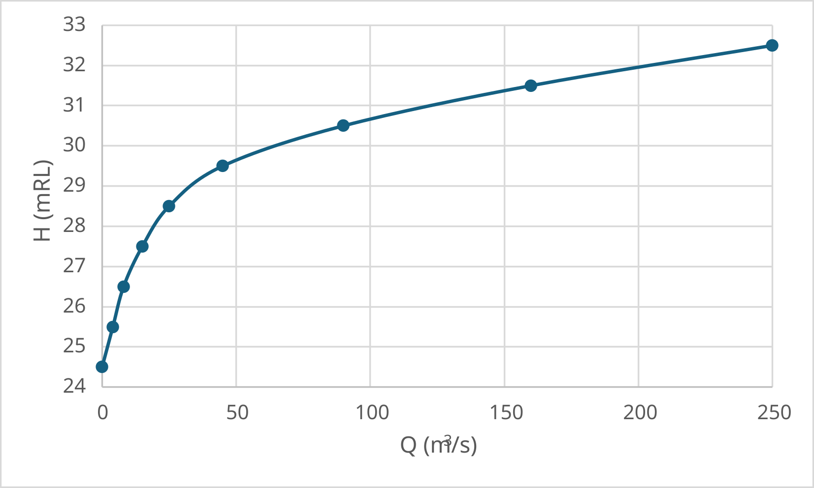
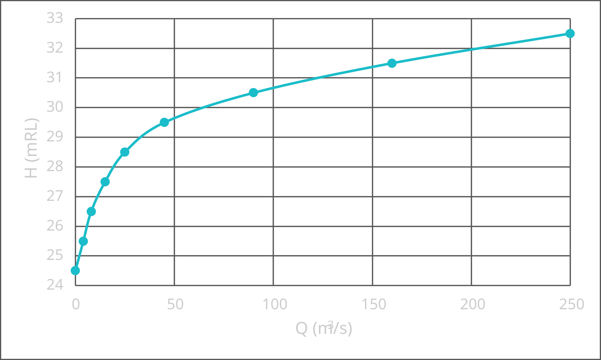
..\bc_dbase\HQ.csv
H,Q
24.5, 0.0
25.5, 4.0
26.5, 8.0
27.5, 15.0
28.5, 25.0
29.5, 45.0
30.5, 90.0
31.5, 160.0
32.5, 250.05.16.5.2 QN
- Spatial: Automatically generated stage-discharge relationship applied along a nodestring boundary
- Location: Polyline (Nodestring)
- Data format: None
- Required input variables: friction_slope (rise/run)
- Notes:
- Applies a normal flow boundary condition
- The water level-discharge relationship is computed internally using the specified friction slope
- The boundary must be snapped to the model edge and cannot be applied internally
- Does not require an external data file
! Polyline (Nodestring) Boundary Location Definition
Read GIS Nodestring == ..\model\gis\2d_ns_MyInflows_001_L.shp
! Automatic Stage-Discharge Relationship
BC == QN, Downstream, 0.01 ! boundary_type, location_ID, {0.0} friction_slope (rise/run)
End BC5.16.6 Atmospheric
Atmospheric boundary conditions apply surface forcing terms to the hydrodynamic equations including wind stress, mean sea level pressure loading and direct precipitation. These forcings act over the model domain and influence momentum, water surface elevation and mass balance. Both spatially constant and spatially varying grid based implementations are available as listed in Table 5.40. The links in the Boundary Type column direct the reader to the corresponding subsections below which describe configuration requirements and provide example TUFLOW FV syntax.
Imperial/US Customary Units (Section 5.3) are not supported for atmospheric boundary conditions.
| Boundary Type | Description |
|---|---|
Spatially constant wind speed boundary condition. Typically used to assign wind forcing for small model domains where spatial variability is negligible. |
|
Spatially constant precipitation boundary condition. Typically used to assign direct rainfall for small model domains where spatially variability is negligible. |
|
Spatially varying gridded wind speed boundary condition. Used in the calculation of wind drag and recommended for use where spatial gradients in wind speed and direction are important to capture. For example: metocean, coastal, estuarine or lake studies. |
|
Spatially varying gridded mean sea level pressure boundary condition. Used in cell pressure gradient calculations and recommended for use where spatial gradients in mean sea level pressure are important to capture. For example: metocean, coastal, estuarine or lake studies. |
|
Spatially varying gridded precipitation boundary condition. Recommended for applying direct rainfall to lake, estuary and catchment studies. |
|
Mean sea level pressure and 10m 10 minute wind speed generated using the Holland tropical cyclone parametric model. Typically used for storm tide analysis. |
5.16.6.1 W10
- Spatial: Spatially constant wind forcing applied across the model domain
- Location: Global
- Data format: CSV
- Required input variables: TIME, W10_X (m/s), W10_Y (m/s)
- Notes:
- Typically used for small model domains where spatial variability in wind forcing is negligible
- Does not require a location_ID
! Spatially Constant Wind Speed
BC == W10, MET_20110401_20110701_AEST.csv ! boundary_type, data_filepath
BC Header == local_time, uwnd10m, vwnd10m ! {TIME}, {W10_X} (m/s), {W10_Y} (m/s)
BC Update dt == 3600. ! (s) Update the boundary condition every hour of simulation time
End BC5.16.6.2 PRECIP
- Spatial: Spatially constant precipitation applied across the model domain
- Location: Global
- Data format: CSV
- Required input variables: TIME, PRECIP (m/day)
- Notes:
- Typically used for direct rainfall over small model domains where spatial variability is negligible
- Does not require a location_ID
! Spatially Constant Precipitation (Direct Rainfall)
BC == PRECIP, MET_20110401_20110701_AEST.csv ! boundary_type, data_filepath
BC Header == local_time, rainfall ! {TIME}, {PRECIP} (m/day)
BC Update dt == 900. ! (s) Update the boundary condition every 15 minutes of simulation time
End BC5.16.6.3 W10_GRID, MSLP_GRID, PRECIP_GRID
The W10_GRID, MSLP_GRID and PRECIP_GRID boundary types apply spatially varying atmospheric forcing fields defined on a grid. A grid must be defined using the Grid Definition commands prior to configuring these boundary types. The same grid may be referenced by multiple atmospheric boundary condition blocks.
- Spatial: Spatially varying atmospheric forcing applied over a defined grid
- Location: Grid
- Data format: NetCDF
- Required input variables:
- W10_GRID: TIME, W10_X (m/s), W10_Y (m/s)
- MSLP_GRID: TIME, MSLP (hPA)
- PRECIP_GRID: TIME, PRECIP (m/day)
- Notes:
- Grid must be defined using Grid Definition commands
- Typically sourced from meteorological or climate model output
- Commonly generated using the TUFLOW FV Get Atmos tool
! TUFLOW FV FVC File for Atmospheric Dataset
! Written by `get_atmos`
! Netcdf start time: 2010-03-01 00:00
! Netcdf end time: 2010-05-31 23:00
! Netcdf x-limits: 135.0000, 143.0000
! Netcdf y-limits: -19.0000, -7.0000
! Grid Location
Grid Definition File == GoC_ERA5_20100301_20100531_AEST.nc ! The NetCDF file containing coordinates used to define the grid to which gridded boundary conditions are applied
Grid Definition Variables == longitude, latitude ! {No defaults} X coordinate variable, Y coordinate variable to be read from the NetCDF to create the grid
Grid Definition Label == atmos ! {No defaults} Grid name
End Grid
! Wind Speed
BC == W10_GRID, atmos, GoC_ERA5_20100301_20100531_AEST.nc ! boundary_type, location_ID, data_filepath
BC Header == local_time, uwnd10m, vwnd10m ! {TIME}, {W10_X} (m/s), {W10_Y} (m/s)
BC Update dt == 3600. ! {0.0} Boundary update timestep (s)
BC Time Units == hours ! The unit of time for the boundary condition. {ISODATE | HOURS} | DAYS | MINUTES | SECONDS - Hours since the BC Reference Time (01/01/1990 00:00:00 or 0.0)
End BC
! Mean Sea Level Pressure
BC == MSLP_GRID, atmos, GoC_ERA5_20100301_20100531_AEST.nc
BC Header == local_time, mslp ! {TIME}, {MSLP} (hPa)
BC Update dt == 3600. ! {0.0} Boundary update timestep (s)
BC Time Units == hours ! The unit of time for the boundary condition. {ISODATE | HOURS} | DAYS | MINUTES | SECONDS - Hours since the BC Reference Time (01/01/1990 00:00:00 or 0.0)
BC Scale == 0.01 ! {1.0} Scale from Pascals to Hectopascals
End BC
! Precipitation
BC == PRECIP_GRID, atmos, GoC_ERA5_20100301_20100531_AEST.nc
BC Header == local_time, precip_rate ! {TIME}, {PRECIP} (m/day)
BC Update dt == 3600. ! {0.0} Boundary update timestep (s)
BC Time Units == hours ! The unit of time for the boundary condition. {ISODATE | HOURS} | DAYS | MINUTES | SECONDS - Hours since the BC Reference Time (01/01/1990 00:00:00 or 0.0)
BC Scale == 86.4 ! {1.0} Scale from ERA5 "Mean total precipitation rate' variable kg/m^2/s to m/day
End BC5.16.6.4 CYC_HOLLAND
- Spatial: Parametric cyclone forcing applied across the model domain
- Location: Moving Point
- Data format: CSV
- Required input variables: TIME, X, Y, P0, PA, RMAX, B, KM, THETAMAX, DELTAFM, WBGX, WBGY (refer to the syntax block below for supported units)
- Notes:
- Implements the Holland parametric tropical cyclone model
- Generates mean sea level pressure and 10 m wind speed forcing
- Typically used for storm tide analysis
- Does not require a location_ID
- If running TUFLOW FV in cartesian coordinates (Section 5.3) Spherical == 0, a representative Latitude for the model domain is required to correctly configure the CYC_HOLLAND boundary type.
! Holland Parametric Tropical Cyclone Model
BC == CYC_HOLLAND, ..\bc_dbase\Example_Holland_Cyclone.csv ! boundary_type, data_filepath
BC Header == TIME, X, Y, P0, PA, RMAX, B, KM, THETAMAX, DELTAFM, WBGX, WBGY
End BC
! Where:
! - {TIME}: Time (HOURS or ISODATE)
! - {X}: Cyclone position X coordinate (Decimal degrees or meters)
! - {Y}: Cyclone position Y coordinate (Decimal degrees or meters)
! - {P0}: Cyclone central pressure (hPa)
! - {PA}: Ambient mean sea level pressure (hPa)
! - {RMAX}: Radius of maximum winds (m)
! - {B}: Holland peakedness coefficient
! - {KM}: Gradient wind reduction factor
! - {THETAMAX}: Line of maximum winds (Degrees)
! - {DELTAFM}: Asymmetry factor
! - {WBGX}: Background wind X-component (m/s)
! - {WBGY}: Background wind Y-component (m/s)5.16.7 Spectral Wave
Spectral wave boundary conditions are used to represent the hydrodynamic influence of surface gravity waves in coastal, estuarine and large lake simulations. They enable the modelling of wave setup, wave setdown and wave driven circulation including longshore and cross shore currents. Wave forcing may be applied using precomputed wave model outputs or through dynamic coupling with a spectral wave model during runtime. The available 2D HD simulation class spectral wave boundary types are listed in Table 5.41. The links in the Boundary Type column direct the reader to the corresponding subsections below which describe configuration requirements and provide example TUFLOW FV syntax.
Imperial/US Customary Units (Section 5.3) are not supported for wave boundary conditions.
| Boundary Type | Description |
|---|---|
Gridded spatially and temporally varying wave fields read from an external spectral wave model output file. Hydrodynamics respond to wave forcing through radiation stress and associated wave momentum flux gradients. There is no feedback from TUFLOW FV to the wave model. Commonly referred to as uncoupled wave forcing. Typically used to model wave setup and setdown and wave driven longshore and crossshore currents. |
|
A spectral wave model (for example SWAN) is executed concurrently with TUFLOW FV. Hydrodynamic variables such as water level currents and bed elevation are passed to the wave model. Updated wave fields are returned to TUFLOW FV and influence the hydrodynamic solution. This two way exchange is referred to as coupled wave forcing. Typically used where strong wave current interaction is important including wave setup setdown and wave driven circulation. |
5.16.7.1 WAVE
- Spatial: Spatially varying wave forcing on a grid
- Location: Grid
- Data format: NetCDF
- Required input variables: TIME, HSIGN, TPS, DIR, UBOT, TMBOT, FORCE_X, FORCE_Y, DEPTH (refer to the syntax block below for supported units)
- Notes:
- Wave fields are read from an external spectral wave model output file(s)
- Additional optional wave variables may be included if available
- Uncoupled wave forcing reads wave fields only and does not pass hydrodynamic feedback to the wave model
- TUFLOW offers the SWAN GIS Tools to assist in the generation of wave boundary conditions
! Grid Location
Grid Definition File == ..\..\SWAN\Wave_Results.nc ! The NetCDF file containing coordinates used to define the grid to which gridded boundary conditions are applied
Grid Definition Variables == xp, yp ! {No defaults} X coordinate variable, Y coordinate variable to be read from the NetCDF to create the grid
Grid Definition Label == A ! {No defaults} Grid name
End Grid
! Gridded Wave Boundary Conditions
BC == WAVE, A, ..\..\SWAN\Wave_Results.nc ! boundary_type, location_ID, data_filepath
BC Header == time, hsig, tpsmoo, dir, ubot, tmbot, wforce_x, wforce_y, depth ! TIME, HSIG, TPS, DIR, UBOT, TMBOT, FORCE_X, FORCE_Y, DEPTH
BC Update dt == 3600. ! {0.0} Boundary update timestep (s)
BC Time Units == hours ! The unit of time for the boundary condition. {ISODATE | HOURS} | DAYS | MINUTES | SECONDS - Hours since the BC Reference Time (01/01/1990 00:00:00 or 0.0)
End BC
! Where:
! - TIME: Time (HOURS or ISODATE) - Required
! - HSIG: Significant wave height (m) - Required
! - TPS: Smoothed peak wave period (s) - Required
! - DIR: Mean wave direction (degrees) - Required
! - UBOT: The rms-value of the maxima of the orbital velocity near the bottom (m/s) - Optional
! - TMBOT: The bottom wave period (s) - Optional
! - FORCE_X: Wave induced force x-component (N/m^2) - Optional
! - FORCE_Y: Wave induced force y-component (N/m^2) - Optional
! - DEPTH: Wave model water depth (m) - Optional5.16.7.2 WAVE_COUPLED
- Spatial: Coupled wave forcing applied by an external spectral wave model
- Location: Global
- Data format: None
- Required input variables: swc_filepath
- Notes:
- The coupled wave model control file is supplied as the BC input
- Hydrodynamic information is exchanged between TUFLOW FV and the wave model during runtime
- TUFLOW offers the SWAN GIS Tools to assist in the generation of wave boundary conditions
! Coupled Hydrodynamic And Spectral Wave Model
BC == WAVE_COUPLED, ..\..\SWAN\input\MB_002.swn ! boundary_type, swc_filepath
End BC5.16.8 Force
Force boundary conditions apply external momentum sources directly to the hydrodynamic solution. They are typically used to represent localised mechanical forcing such as jet discharges propeller wash or other imposed momentum fluxes that are not adequately represented by a discharge boundary alone. The available 2D HD simulation class force boundary types are listed in Table 5.42. The links in the Boundary Type column direct the reader to the corresponding subsections below which describe configuration requirements and provide example TUFLOW FV syntax.
Imperial/US Customary Units (Section 5.3) are not supported for force boundary conditions.
| Boundary Type | Description |
|---|---|
The FORCE boundary type applies a point force at a specified location. The x and y force components are added directly to the single model cell containing the point. Typically used to represent localised momentum inputs such as jet discharge or mechanical disturbance. |
|
The FORCE_POLY boundary type distributes a specified force over a user defined polygon. The applied force is distributed across intersecting cells in proportion to cell area. Used where momentum forcing acts over a finite area rather than a single point. |
|
The FORCEM boundary type applies a moving point force during the simulation. The force location is defined in the input timeseries and interpolated between coordinates. Typically used to represent moving disturbances such as vessels or dredging operations. |
5.16.8.1 FORCE
- Spatial: Localised momentum forcing applied at a single mesh location
- Location: Point
- Data format: CSV
- Required input variables: TIME, FORCEX (N), FORCEY (N)
! Point Boundary Location Definition
Read GIS SA == ..\model\gis\2d_sa_Pipe_Outlet_001_P.shp
! Force boundary - Add momentum flux to pipe outlet
BC == FORCE, Pipe_Outlet_001, ..\bc_dbase\Outlets_001.csv ! boundary_type, location_ID, data_filepath
BC Header == Time, Force_X, Force_Y ! {TIME}, {FORCEX} (N), {FORCEY} (N)
End BC5.16.8.2 FORCE_POLY
- Spatial: Momentum forcing distributed over a polygon area
- Location: Polygon
- Data format: CSV
- Required input variables: TIME, FORCEX (N), FORCEY (N)
- Notes:
- Force is distributed to cells within the polygon in proportion to individual cell volume V\(_i\), divided by the total cell volume V encompassed by the digitised polygon
- Used where forcing acts over an area rather than a single point
- Cells with centroids enclosed by the digitised polygon will be subject to this boundary condition
! Polygon Boundary Location Definition
Read GIS SA == ..\model\gis\2d_sa_Pipe_Outlet_001_R.shp
! Force boundary - Add momentum flux to pipe outlet
BC == FORCE, DS_Outlet_001, ..\bc_dbase\Outlets_001.csv ! boundary_type, location_ID, data_filepath
BC Header == Time, Force_X, Force_Y ! {TIME}, {FORCEX} (N), {FORCEY} (N)
End BC5.16.8.3 FORCEM
- Spatial: Force applied to moving point
- Location: Moving Point
- Data format: CSV
- Required input variables: TIME, X (m, ft or decimal degrees), Y (m, ft or decimal degrees), FORCEX (N), FORCEY (N)
- Notes:
- The moving point coordinates are specified directly in the input file
- The path is linearly interpolated between available coordinates
! Moving Point Force - Propeller Wash
BC == FORCEM, ..\bc_dbase\Ship_Wash_001.csv ! boundary_type, data_filepath
BC Header == Time, X, Y, ForceX, ForceY ! {TIME}, {X}, {Y}, {FORCEX} (N), {FORCEY} (N)
End BC5.16.9 Zero Gradient And Reflective
Zero gradient and reflective boundary conditions are typically used to represent open model extents or solid lateral boundaries, respectively. These boundary types do not require external input data. The available boundary types are listed in Table 5.43. The links in the Boundary Type column direct the reader to the corresponding subsections below which describe configuration requirements and provide example TUFLOW FV syntax.
As no timeseries data are required the BC block format is modified to:
BC == boundary_type, location_ID
An example of each boundary type is provided below.
| Boundary Type | Description |
|---|---|
Assumes zero normal gradient of flow variables across the boundary. Boundary values match those of the adjacent interior cell. Typically used at open model extents where minimal artificial reflection is desired. |
|
Reflective slip wall condition. Normal velocity at the boundary is zero while tangential velocity is unconstrained. Used to represent smooth solid boundaries. |
|
Reflective no slip wall condition. Both normal and tangential velocities are zero at the boundary. Used to represent rigid solid walls where shear effects are important. |
5.16.9.1 ZG
- Spatial: Applied along a boundary nodestring
- Location: Polyline (Nodestring)
- Data format: None
- Required input variables: None
- Notes:
- Applies a zero gradient condition normal to the boundary
- Typically used at open boundaries where minimal artificial reflection is desired
! Polyline (Nodestring) Boundary Location Definition
Read GIS Nodestring == ..\model\gis\2d_ns_Outlet_001_L.shp
! Zero Gradient
BC == ZG, OuterBay ! boundary_type, location_ID
End BC5.16.9.2 RS
- Spatial: Applied along a boundary nodestring
- Location: Polyline (Nodestring)
- Data format: None
- Required input variables: None
- Notes:
- Applies a reflective slip wall condition
- Normal velocity is zero while tangential velocity is unconstrained
- Used to represent smooth solid boundaries
! Polyline (Nodestring) Boundary Location Definition
Read GIS Nodestring == ..\model\gis\2d_ns_LabTest_001_L.shp
! Zero Gradient
BC == RS, FlumeEast ! boundary_type, location_ID
End BC5.16.9.3 RNS
- Spatial: Applied along a boundary nodestring
- Location: Polyline (Nodestring)
- Data format: None
- Required input variables: None
- Notes:
- Applies a reflective no slip wall condition
- Both normal and tangential velocities are zero at the boundary
- Used to represent rigid solid walls
! Polyline (Nodestring) Boundary Location Definition
Read GIS Nodestring == ..\model\gis\2d_ns_wall_001_L.shp
! Zero Gradient
BC == RNS, Wall ! boundary_type, location_ID
End BC5.17 Hydraulic Structures
5.17.1 Command Status
Optional.
5.17.2 Description
TUFLOW FV supports a range of hydraulic structure types including weirs, culverts and bridges. Additional behaviour may be defined using user defined water level versus discharge relationships or prescribed time series. Structure types may include operational controls to represent pumps, gates, valves or other flow regulation devices.
Hydraulic structures modify flow across a defined connection using a flux or energy loss formulation. Variable bathymetry modifies bed elevation within a defined zone during a simulation. Both are configured using a Structure block and are referred to as structures in this chapter.
This section outlines the procedure for defining structures within a simulation. Each supported type is presented with configuration examples.
To incorporate a structure into a simulation the following process is used.
- Select the structure type appropriate for the modelling objective (Section 5.17.2.1)
- Select a supported connection type between the structure and the 2D domain and define the connection geometry (Section 5.17.2.2)
- Configure the structure using a Structure block (Section 5.17.2.3)
Operational control can optionally be added if required by defining one or more control blocks (Section 5.17.11).
5.17.2.1 Step 1: Structure Types
This step guides selection of the appropriate structure type based on the physical process to be represented.
Table 5.44 summarises the supported structure types and provides example applications. Links in the Model Implementation column direct the reader to dedicated sections that describe configuration requirements and TUFLOW FV syntax examples. The table presents the subset relevant to the 2D HD simulation class. For formulation detail and selection guidance refer to Section B.12.1.
| Model Implementation | Description |
|---|---|
Represent hydraulic control structures based on weir flow equations. Example applications include spillways tidal control structures and flow control across levees or road crests. |
|
Model enclosed conduits conveying flow beneath embankments or structures. Example applications include road crossings railway embankments and floodplain drainage links. |
|
Simulate flow constrictions and associated energy losses caused by bridge abutments piers and decks. Example applications include river crossings where contraction and deck overtopping influence upstream water levels. |
|
Define flow restrictions based on user specified permeability and Darcy’s Law. Example applications include rockfill bunds permeable breakwaters and seepage through engineered barriers. |
|
Define a custom structure using a matrix that relates upstream and downstream water levels to flow rate. Example applications include rating curve regulators, complex hydraulic controls or data derived discharge relationships. |
|
Define structure behaviour using a prescribed flow time series. Example applications include pumps, controlled releases between reservoirs or diversion flows defined from operational records. |
|
Impose a no flow condition to block discharge across a specified location. Example applications include levees, flood barriers and solid training walls not resolved by the model mesh and bathymetry. |
|
Modify bed elevation within a defined zone based on prescribed inputs or control rules. Example applications include levee breach and simplified bed scour. |
5.17.2.2 Step 2: Structure Connection Types
In this step the selected structure type is connected to the 2D domain using a supported connection type.
Structure connections are defined using one of the methods described in Table 5.45. The appropriate connection type depends on the selected structure type. Compatibility between structure types and connection types is summarised in Table 5.46.
Examples of each connection definition method are provided in the sub sections that follow. For formulation detail and selection guidance refer to Section B.12.2.
| Connection Type | Description |
|---|---|
Defined using a single polyline. Typically used for structures that span a channel or flow path such as weirs and bridges. |
|
Defined using two separate polylines. Connects two discrete locations in the model and is commonly used for culverts or structures with inlet and outlet points. Allows overtopping flow across the embankment between the nodestrings. |
|
Defined using two separate polygons. Connects two areas within the model domain and is generally used for pump structures or systems transferring water between distinct zones where momentum effects are small. |
|
Defined using a single polygon. Modifies hydraulic properties within a defined area based on time or other model conditions. Typically used for variable bathymetry. |
| Structure Type | Nodestring | Linked Nodestrings | Linked Zones | Zone |
|---|---|---|---|---|
Weir |
Y |
Y* |
Y* |
N |
Culvert |
Y* |
Y |
Y* |
N |
Bridge |
Y |
Y |
N |
N |
Pump |
Y |
Y |
Y |
N |
Porous |
Y |
Y |
Y |
N |
User-Defined Matrix |
Y |
Y |
Y* |
N |
User-Defined Timeseries |
Y |
Y |
Y* |
N |
Wall |
Y |
N |
N |
N |
Bathymetry |
N |
N |
N |
Y |
A value of Y* indicates support with limitations. The specific limitations depend on the structure type and are described in the relevant structure type section.
Linked Zones connections transfer discharge without resolving momentum exchange between linked regions. This approach is appropriate for low velocity systems where dynamic momentum effects are negligible.
5.17.2.2.1 Nodestring
Nodestring structure connections are defined using the Read GIS Nodestring command. During model initialisation (Section 5.2) template layers prefixed with ‘2d_ns_’ are created to support digitisation of nodestring polylines. Geometry type is indicated by the ‘L’ suffix for polyline features (e.g. 2d_ns_Bridge_001_L.shp). The ’2d_ns’ layer contains two attributes as shown in Table 5.47. For hydraulic structure connections the ID attribute should be populated and the Flag attribute left blank.
When read by TUFLOW FV each polyline is snapped to the nearest cell faces along its path and converted to a nodestring. The resulting cell face selections can be reviewed in the simulation output _ns_check_L layer when the Write Check Files command is enabled.
| Attribute Name(s) | Description | Type |
|---|---|---|
ID |
Unique identifier/name of the polyline |
Character |
Flags |
Should be left blank for hydraulic structure connections. |
Character |
For hydraulic structure calculations the digitised direction of the polyline defines the upstream and downstream sides of the structure. Polylines should be digitised from right to left when looking in the downstream direction. Figure 5.16 illustrates this convention for a single nodestring applied at a dam spillway.
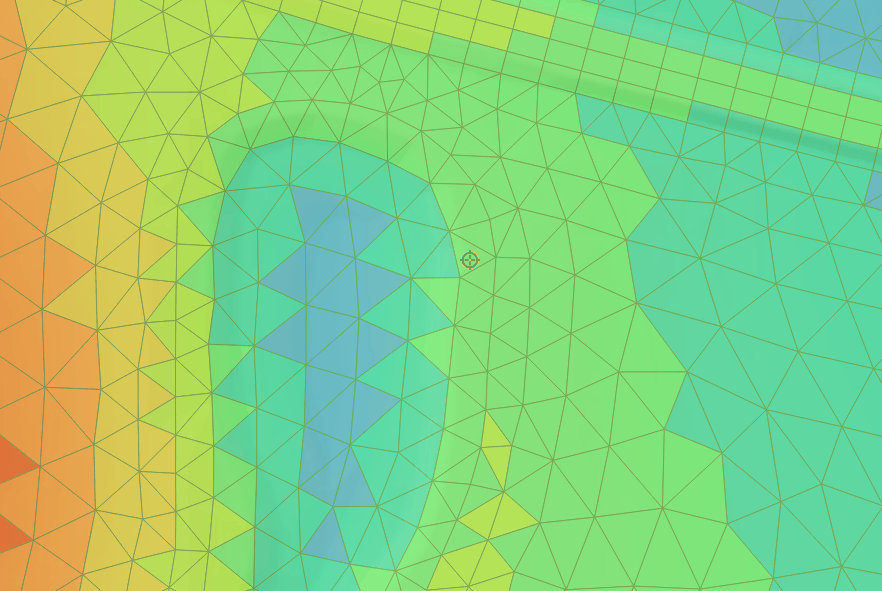
5.17.2.2.2 Linked Nodestrings
Linked nodestring connections follow the same spatial definition approach as single nodestrings (Section 5.17.2.2.1). The key difference is that two separate nodestring polylines are digitised to define upstream and downstream locations.
Each polyline must have a unique ID. These IDs are later referenced in the structure block to define the upstream and downstream sides of the connection.
The digitised direction of each polyline defines the upstream and downstream orientation of the structure. The same right to left convention when looking downstream applies as described in Section 5.17.2.2.1.
Figure 5.17 illustrates a linked nodestring configuration used to represent a culvert beneath a road embankment. The bathymetry between the nodestrings may be raised to represent the embankment which allows overtopping flow to be resolved within the 2D domain.

5.17.2.2.3 Linked Zones
Linked zones connections are defined using 2d_zn layers and the Read GIS Zone command. Two separate polygons are digitised to define upstream and downstream zones.
During model initialisation (Section 5.2) template layers prefixed with ‘2d_zn_’ are created to support digitisation of zone connections. Geometry type is indicated by the ‘_R’ suffix for region features (e.g. 2d_zn_Drain_001_R.shp). The ‘2d_zn_’ layer requires a single Name attribute as shown in Table 5.48.
The cells selected by each zone polygon can be reviewed in the simulation output _1d_to_2d_check_R layer when the Write Check Files command is enabled.
| Attribute Name(s) | Description | Type |
|---|---|---|
Name |
Unique identifier/name of the zone. |
Character |
Figure 5.18 shows upstream and downstream connection zones for a hydraulic structure through an embankment.

5.17.2.2.4 Zone
A single zone connection follows the same spatial definition approach as Linked Zones (Section 5.17.2.2.3). A single polygon is digitised using a 2d_zn layer and read with the Read GIS Zone command.
Figure 5.19 shows the digitisation of a single zone polygon where a levee breach is to occur during a simulation.
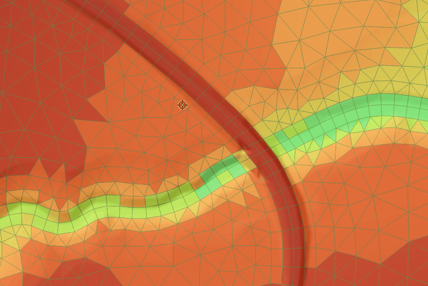
5.17.2.3 Step 3: Structure Block
In this step the selected structure type and connection type are configured using a structure block.
Structure blocks define and configure hydraulic and variable bathymetry structures. Each block links a spatial connection to structure behaviour, either controlling discharge or modifying bed elevation. Multiple structure blocks may be defined within a simulation and operate independently.
A structure block is initiated with the Structure command and closed with the End Structure command. All commands between these lines apply only to the structure being defined.
The structure header depends on the selected connection type.
Single feature connections:
! Conceptual structure block form
Structure == [connection_type], [location_ID]
[behaviour_command]
[structure_specific_configuration_commands]
End StructureLinked connections:
! Conceptual structure block form - linked connection
Structure == [connection_type], [location_ID_US], [location_ID_DS]
[behaviour_command]
[structure_specific_configuration_commands]
End StructureWhere:
connection_typedefines how the structure connects to the model (Nodestring, Linked Nodestrings, Linked Zones or Zone)location_ID,location_ID_USandlocation_ID_DSrefer to features defined using Read GIS Nodestring or Read GIS Zonebehaviour commandrefers to Flux Function, Energy Loss Function or Bed Adjust- structure specific configuration commands depend on the selected structure type and connection type
Detailed syntax and worked examples for each structure type are provided in Section 5.17.3 to Section 5.17.10. A summary of structure block commands is presented in Table 5.49.
| Command | Description |
|---|---|
Conditional - Required if including any hydraulic structures or variable bathymetry. Begins the structure block and defines the connection type linking the structure to the 2D domain. |
|
Conditional - Required for variable bathymetry structures. Defines the bathymetric modification model. |
|
Conditional - Required for flux based structure formulations weir, culvert, porous, matrix, timeseries or wall. |
|
Conditional - Required when representing a bridge or other structure with sub grid scale energy losses. Configures energy loss structures such as bridges. |
|
Conditional - Required if Bed Adjust == bathy_database. Defines the CSV filepath to a DEM lookup table used to interpolate bathymetry values. |
|
Conditional - Required when modelling a pump with Flux Function == Timeseries. Disables structure flux limit checks. |
|
Conditional - Required if using the table Energy Loss Function. Defines the relationship between discharge (Q) and head loss (dH). |
|
Conditional - Required when using the culvert flux function. |
|
Conditional - Required for weir, weir_dz and porous Flux Function options. |
|
Conditional - Required when using the coefficient Energy Loss Function. Represents sub grid scale energy losses as a function of velocity head. |
|
Conditional - Required for structures using the Linked Zones connection type. Defines upstream and downstream orientation for flux limiting calculations. |
|
Conditional - Required for some structures using the Linked Zones connection type when the maximum effective flow width cannot be inferred from other structure inputs. |
|
Optional - Defines a blockage profile to reduce effective flow width for bridges or flow constrictions. |
|
Optional - Defines a variable effective flow width for bridges or flow constrictions. |
|
Optional - Defines the interval at which the structure update function is called. |
|
Optional - Assigns a name to the structure for identification in CSV outputs and log files. |
|
Optional - Begins a structure control sub block for operational control or variable bathymetry. See Section 5.17.11. |
|
Conditional - Required if using operational control hydraulic structures or variable bathymetry structures. Ends a structure control sub block. |
|
Conditional - Required if using hydraulic structures. Ends the structure block. |
5.17.3 Weirs
Weirs represent hydraulic control structures that modify discharge based on upstream and downstream head. Typical applications include spillways, tidal control structures and flow control across levees or road crests.
Weirs are configured within a structure block using the Flux Function command. The available weir implementations are listed in Table 5.50. Links in the Flux Function column direct the reader to the corresponding subsections below which describe configuration requirements and provide example TUFLOW FV syntax.
By default the broad crested weir equation with submergence is applied. Alternative weir formulations are described in Section B.12.1.1. Hydraulic parameters are defined using the Properties command.
5.17.3.1 Weir
- Connection type: Nodestring, Linked Nodestrings, Linked Zones*
- Required commands: Flux Function, Properties
- Notes:
- Linked Zones is recommended only for low velocity systems
- Linked Zones requires Zone Inlet/Outlet Orientation and Max Open Width
- The argument B_user overrides the calculated weir width for Linked Nodestrings or the Max Open Width for Linked Zones. It is not available for Nodestring structure connections
! Structure block - weir
! Nodestring
Structure == Nodestring, [location_ID]
! or Linked Nodestrings
Structure == Linked Nodestrings, [location_ID_US], [location_ID_DS]
! or Linked Zones*
Structure == Linked Zones, [location_ID_US], [location_ID_DS]
Flux Function == Weir
Properties == [H, C, Ex, a, b, Csf_min, B_user] ! {No default} H (mRL), {1.705} C, {1.5} Ex, {8.55} a, {0.556} b, {0.7} Csf_min, {No Default} B_user (m or ft)
! Required for Linked Zones only
Zone Inlet/Outlet Orientation == [angle_US, angle_DS] ! {No default} Inlet and outlet angle (degrees anticlockwise from east)
Max Open Width == [width] ! {No default} Max flow width (m) for flux limiting
End Structure5.17.3.2 Weir_dz
- Connection type: Nodestring
- Required commands: Flux Function, Properties
! Structure block - weir_dz
Structure == Nodestring, [location_ID]
Flux Function == Weir_dz
Properties == [dz, C, Ex, a, b, Csf_min] ! {No default} dz (m), {1.705} C, {1.5} Ex, {8.55} a, {0.556} b, {0.7} Csf_min
End Structure5.17.4 Culverts
Culverts represent enclosed conduits that transfer flow between two locations within the 2D domain. They are typically used to model road crossings, railway embankments or drainage links.
Culverts are configured within a structure block using the Flux Function command. The available culvert implementation is summarised in Table 5.51. The link in the Flux Function column directs the reader to the subsection below which describes configuration requirements and provides example TUFLOW FV syntax.
Culvert hydraulics are computed using standard inlet and outlet control formulations as described in Section B.12.1.2. Advanced configuration for inlet control and automatic inlet and outlet energy loss coefficients are specified using the Culvert Parameters command, however typically these can be omitted from the .fvc file and the default values can be applied.
| Flux Function | Description |
|---|---|
Represents an enclosed conduit conveying discharge between an upstream and downstream connection. |
5.17.4.1 Culvert
- Connection type: Nodestring*, Linked Nodestrings, Linked Zones*
- Required commands: Flux Function, Culvert File
- Optional commands: Culvert Parameters, Culvert Invert Check
- Notes:
- Linked Nodestrings is the recommended connection type for culverts
- Nodestring does not allow embankment overtopping in the 2D domain
- Linked Zones is recommended only for low velocity systems
- Linked Zones requires Zone Inlet/Outlet Orientation
! Structure block - culvert
! Nodestring*
Structure == Nodestring, [location_ID]
! or Linked Nodestrings (recommended)
Structure == Linked Nodestrings, [location_ID_US], [location_ID_DS]
! or Linked Zones*
Structure == Linked Zones, [location_ID_US], [location_ID_DS]
! Culvert flux function and culvert geometry or hydraulic database
Flux Function == Culvert
Culvert File == [culvert_database.csv], [culvert_ID] ! {No default} Database file, {No default} Culvert ID
! Required for Linked Zones only
Zone Inlet/Outlet Orientation == [angle_US], [angle_DS] ! {No default} Inlet and outlet angle (degrees anticlockwise from east)
! Max Open Width not required - automatically calculated from culvert geometry
End Structure5.17.5 Bridges
Bridge structures represent energy losses associated with bridge decks, abutments and piers. They are configured within a structure block using an energy loss formulation selected via the Energy Loss Function command.
Table 5.52 summarises the supported bridge energy loss formulations and links to the relevant model implementation sections.
| Energy Loss Function | Description |
|---|---|
Energy losses calculated using a form loss coefficient. Optional application of a blockage file or width file to represent reductions in effective flow width. |
|
Energy losses defined using a lookup table relating discharge (Q) to head loss (dH). |
Bridge structures are supported for the Nodestring and Linked Nodestrings connection types only. Formulation details are provided in Section B.12.1.3.
5.17.5.1 Form Loss Coefficient
- Connection type: Nodestring, Linked Nodestrings
- Required commands: Energy Loss Function, Form Loss Coefficient
- Optional commands: Blockage File or Width File
- Notes:
- Use either Blockage File or Width File to represent reductions in effective flow width
- Blockage and Width files cannot be applied simultaneously
Example control file syntax is shown below.
! Structure block - bridge (coefficient)
! Nodestring
Structure == Nodestring, [location_ID]
! or Linked Nodestrings
Structure == Linked Nodestrings, [location_ID_US], [location_ID_DS]
Energy Loss Function == Coefficient ! {None} | Coefficient | Table
Form Loss Coefficient == [K] ! {0.0} Form loss coefficient
! Optional. Z, FRAC profile
Blockage File == ..\model\csv\Bridge_BLK_001.csv
! or Optional. Z, WIDTH profile
Width File == ..\model\csv\Bridge_WID_001.csv
End StructureExample blockage file. A FRAC of zero is completely blocked, a FRAC is 1.0 is completely open.
Bridge_BLK_001.csv
Z, FRAC
5.0, 0.9
7.0, 0.9
7.1, 0.0
7.9, 0.0
8.0, 0.5
8.9, 0.5
9.0, 1.0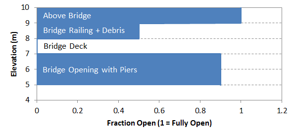
Example width file. Width is available flow width. A width of zero is effectively fully blocked.
Bridge_WID_001.csv
Z, WIDTH
5.0, 9.0
7.0, 9.0
7.1, 0.0
7.9, 0.0
8.0, 5.0
8.9, 5.0
9.0, 10.0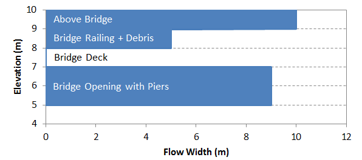
5.17.5.2 Energy Loss Table
- Connection type: Nodestring, Linked Nodestrings
- Required commands: Energy Loss Function, Energy Loss File
- Notes:
- The energy loss table defines head loss (dH) as a function of discharge (Q)
- Blockage or width files are not supported
Bridge With Energy Loss Table - Single Nodestring
! Structure block - bridge (table)
! Nodestring
Structure == Nodestring, [location_ID]
! or Linked Nodestrings
Structure == Linked Nodestrings, [location_ID_US], [location_ID_DS]
Energy Loss Function == Table ! {None} | Coefficient | Table
Energy Loss File == ..\model\csv\Bridge_ELT_001.csv ! Q, dH table
End StructureExample energy loss file.
Bridge_ELT_001.csv
Q, dH
-5., 0.10
0.0, 0.00
1.0, 0.02
2.0, 0.05
5.0, 0.105.17.6 User Defined Timeseries
User defined timeseries structures specify discharge through a structure connection using a flow timeseries. This method is configured using the Flux Function and Flux File commands within a structure block. Pumping is configured using the same timeseries formulation with nonlinear shallow water flux limiting disabled (Section 5.17.6.1.1).
Table 5.53 summarises the available timeseries configurations and links to the relevant sections. Formulation details and flux file requirements are provided in Section B.12.1.4.
| Flux Function | Description |
|---|---|
Sets discharge as a function of time using a user supplied time series file. Discharge is interpolated during the simulation to determine flow under current time conditions. |
5.17.6.1 Timeseries
- Connection type: Nodestring, Linked Nodestrings, Linked Zones*
- Required commands: Flux Function, Flux File
- Notes:
- Linked Zones is recommended only for low velocity systems
- Linked Zones requires Zone Inlet/Outlet Orientation and Max Open Width
! Structure block - user defined timeseries
! Nodestring
Structure == Nodestring, [location_ID]
! or Linked Nodestrings
Structure == Linked Nodestrings, [location_ID_US], [location_ID_DS]
! or Linked Zones*
Structure == Linked Zones, [location_ID_US], [location_ID_DS]
Flux Function == Timeseries ! User specified flow time series
Flux File == ..\model\csv\flow_timeseries.csv ! Time, Q time series
! Required for Linked Zones only
Zone Inlet/Outlet Orientation == [angle_US], [angle_DS] ! {No default} Inlet and outlet angle (degrees anticlockwise from east)
Max Open Width == [width] ! {No default} Max flow width (m) for flux limiting
End Structure5.17.6.1.1 Pumping Configuration
Pumping is implemented using the Flux Function == Timeseries formulation with nonlinear shallow water flux limiting disabled. The prescribed discharge is applied without nonlinear shallow water flux limiting.
- Additional required command:
- NLSWE Limit == 0
! Structure block - pump (timeseries formulation)
Structure == Nodestring, [pump_location]
Flux Function == Timeseries
Flux File == ..\model\csv\pump_flow.csv
NLSWE Limit == 0 ! Disable flux limiting
End Structureflow_timeseries.csv example if Time Format == Hours.
time,Q
0,0
1.0,2
1.5,6
10,12.5flow_timeseries.csv example if Time Format == ISODATE.
time,Q
01/01/2024 00:00:00,0
01/01/2024 01:00:00,2
01/01/2024 01:30:00,6
01/01/2024 12:30:00,12.6pump_flow.csv example if Time Format == Hours.
time,Q
0,0
0.99,0
1.0,2
1.5,2
1.51,0
5,0pump_flow.csv example if Time Format == ISODATE.
time,Q
01/01/2024 00:00:00,0
01/01/2024 00:59:00,0
01/01/2024 01:00:00,2
01/01/2024 01:30:00,2
01/01/2024 01:31:00,0
01/01/2024 05:00:00,05.17.7 Porous Structures
Porous structures represent flow through permeable media using Darcy’s law. They are commonly used to model rockfill bunds, permeable barriers and seepage through engineered structures. Hydraulic parameters are defined using the Properties command. Formulation details are provided in Section B.12.1.5.
The available porous structure implementation is summarised in Table 5.54. The link in the Flux Function column directs the reader to the subsection below which describes configuration requirements and provides example TUFLOW FV syntax.
| Energy Loss Function | Description |
|---|---|
Represents flow through permeable media using Darcy’s law. |
5.17.7.1 Porous
- Connection type: Nodestring, Linked Nodestrings, Linked Zones
- Required commands: Flux Function, Properties
- Notes:
- Linked Zones requires Zone Inlet/Outlet Orientation and Max Open Width
Example control file syntax is shown below.
! Structure block - porous
! Nodestring
Structure == Nodestring, [location_ID]
! or Linked Nodestrings
Structure == Linked Nodestrings, [location_ID_US], [location_ID_DS]
! or Linked Zones
Structure == Linked Zones, [location_ID_US], [location_ID_DS]
Flux Function == Porous
! Permeable structure - Darcy's law
Properties == [K], [L] ! {No default} K (m/s), {No default} Flowpath length (m)
! Required for Linked Zones only
Zone Inlet/Outlet Orientation == [angle_US], [angle_DS] ! {No default} Inlet and outlet angle (degrees anticlockwise from east)
Max Open Width == [width] ! {No default} Max flow width (m) for flux limiting
End Structure5.17.8 User Defined Matrix
User defined matrix structures prescribe discharge as a function of upstream and downstream water levels using a user supplied matrix. This approach is configured using Flux Function and a matrix definition file specified with Flux File. Formulation details and flux file requirements are provided in Section B.12.1.6.
The available user defined matrix implementation is summarised in Table 5.55. The link in the Flux Function column directs the reader to the subsection below which describes configuration requirements and provides example TUFLOW FV syntax.
| Flux Function | Description |
|---|---|
Describes discharge as a function of upstream and downstream water levels using a user supplied matrix file. The matrix is interpolated during the simulation to determine discharge under current head conditions. |
5.17.8.1 Matrix
- Connection type: Nodestring, Linked Nodestrings, Linked Zones*
- Required commands: Flux Function, Flux File
- Notes:
- Linked Zones is recommended only for low velocity systems
- Linked Zones requires Zone Inlet/Outlet Orientation and Max Open Width
! Structure block - user defined matrix
! Nodestring
Structure == Nodestring, [location_ID]
! or Linked Nodestrings
Structure == Linked Nodestrings, [location_ID_US], [location_ID_DS]
! or Linked Zones*
Structure == Linked Zones, [location_ID_US], [location_ID_DS]
! User defined flow matrix
Flux Function == Matrix
Flux File == ..\model\csv\matrix_file.csv ! User supplied WL_US, WL_DS to Q relationship
! Required for Linked Zones only
Zone Inlet/Outlet Orientation == [angle_US], [angle_DS] ! {No default} Inlet and outlet angle (degrees anticlockwise from east)
Max Open Width == [width] ! {No default} Max flow width (m) for flux limiting
End StructureMatrix file example.
matrix_file.csv - Simple example symmetrical flow matrix
WL_DS,WL_US,,,
1,1,2,4,10
1,0,3.6,5,6
2,-3.6,0,4,5
4,-5,-4,0,4.5
10,-6,-5,-4.5,05.17.9 Walls
Walls block flow across selected cell faces and can be used where model resolution or bathymetry does not sufficiently prevent conveyance.
The available wall implementation is summarised in Table 5.56. The link in the Flux Function column directs the reader to the subsection below which describes configuration requirements and provides example TUFLOW FV syntax. Formulation details are provided in Section B.12.1.7.
| Flux Function | Description |
|---|---|
Blocks all flow across the specified nodestring by imposing a zero discharge condition. |
5.17.9.1 Wall
- Connection type: Nodestring
- Required commands: Flux Function
! Structure block - wall
Structure == Nodestring, [location_ID]
Flux Function == Wall ! No flow across selected cell faces
End Structure5.17.10 Variable Bathymetry
Variable bathymetry structures modify bed elevations within a defined zone during a simulation. All implementations use the Zone connection type and are configured using the Bed Adjust command.
A variable bathymetry structure requires a nested Control block to modify bed levels during a simulation. The examples below show minimal working configurations. Full control configuration options are described in Section 5.17.11. Any supported control type may be used to operate variable bathymetry structures.
The available bed adjustment methods are summarised in Table 5.57. The link in the Bed Adjust column directs the reader to the subsection below which describes configuration requirements and provides example TUFLOW FV syntax.
| Bed Adjust | Description |
|---|---|
Absolute bed elevation adjustment controlled by a control block. |
|
Relative bed elevation adjustment controlled by a control block. |
|
Bathymetry surface selection controlled by a control block. |
5.17.10.1 Zb_Adjust
- Connection type: Zone
- Required commands: Bed Adjust, Control
! Structure block - absolute bed level adjustment
Structure == Zone, [zone_ID]
! Applies an absolute bed level adjustment
Bed Adjust == Zb_Adjust
! Nested control block (conceptual example)
Control == [control_type]
Control Parameter == Zb
[...control_commands...] ! Commands depend on control_type
End Control
End Structure5.17.10.2 dZb_Adjust
- Connection type: Zone
- Required commands: Bed Adjust, Control
! Structure block - absolute bed level adjustment
Structure == Zone, [zone_ID]
! Applies a bed level adjustment
Bed Adjust == dZb_Adjust
! Nested control block (conceptual example)
Control == [control_type]
Control Parameter == dZb
[...control_commands...] ! Commands depend on control_type
End Control
End Structure5.17.10.3 Bathy_Database
- Connection type: Zone
- Required commands: Bed Adjust, Bathy Database, Control
! Structure block - bathymetry database lookup
Structure == Zone, [zone_ID]
! Applies bed levels from a bathymetry database
Bed Adjust == Bathy_Database
Bathy Database == ..\model\csv\bathy_database.csv
! Nested control block (conceptual example)
Control == [control_type]
Control Parameter == Bathy_Control
[...control_commands...] ! Commands depend on control_type
End Control
End StructureAn example bathymetry database CSV input is provided as follows. This example is also provided in the TUFLOW FV Hydraulic Structure Example Models.
bathy_database.csv
BATHY_CONTROL,BATHY_FILE
-2.0, ..\geo\variable_bathy\Bathy_neg2mRL_001.asc
0.0, ..\geo\variable_bathy\Bathy_0mRL_001.asc
5.0, ..\geo\variable_bathy\Bathy_5mRL_001.asc
10.0, ..\geo\variable_bathy\Bathy_10mRL_001.asc5.17.11 Operational Control
Operational control (optional) enables modification of selected structure attributes during a simulation. It is implemented by defining one or more control blocks nested within a previously defined structure block.
A control block updates a nominated control parameter according to a specified control type and its associated commands. This allows time dependent or condition dependent behaviour such as gate adjustment, pump operation, levee breaching, valve regulation or variable bed modification.
Multiple control blocks may be permitted depending on the selected control type (Section 5.17.11.4). Operational control is not supported for wall or bridge structures.
The following terms are used throughout this section.
- Structure type: The hydraulic flux formulation or variable bathymetry form defined within a structure block
- Structure block: The parent block that defines structure type, connection type, location and configuration
- Control block: A nested block within a structure block that updates a control parameter during a simulation
- Control parameter: The structure attribute eligible for operational modification
- Control type: The method governing how the control parameter is updated
- Control commands: Commands within a control block that define the inputs, sampling, thresholds, timing and targets required by the selected control type
Control block syntax and structure are described in Section 5.17.11.4.
5.17.11.1 Control Parameters
A control parameter is the structure attribute that may be modified during a simulation. It is defined within a control block using the Control Parameter command. Available control parameters are listed in Table 5.58.
| Control Parameter | Description |
|---|---|
Fraction_Open |
Scale factor between 0 and 1 applied to the structure’s flow rate. Commonly used to operate gates or valves that can open or close during a simulation. |
Min_Flow |
Minimum allowable flow rate through the structure, subject to physical limits. Allows a known minimum flow to pass through the structure, without necessarily needing to resolve it with the structure. |
Weir_Crest |
Adjusts the absolute crest elevation of a weir. Typically used to model weir structures whose crest level changes over time due to operational, environmental, or failure processes. |
Weir_dz |
As per Weir_Crest but adjusts the crest elevation of a weir by an relative change (\(\delta\)Z) from the model bathymetry. |
Zb |
A variable bathymetry feature. Sets the absolute bed elevation within the specified zone. Typically used to model levee breaches. |
dZb |
As per Zb but applies a relative change (\(\delta\)Z) to the bed elevation within the specified zone. |
Bathy_Control |
A variable bathymetry feature. Applies bathymetry adjustments using a predefined bathymetric control input. Uses DEMs to define bed elevation changes, allowing for complex geometric changes to be modelled. |
5.17.11.2 Control Types
A control type defines the update mechanism governing how a control parameter is modified during a simulation. Depending on the selected type updates may be driven by:
- a trigger condition
- a predefined time schedule
- sampled model state variables
- a rule based lookup
- a target specification
Available control types are listed in Table 5.59.
| Control Type | Description |
|---|---|
Trigger |
Updates a control parameter when a specified trigger condition is met. |
Timeseries |
Updates a control parameter using values defined in an external time series. |
Sample |
Updates a control parameter based on sampled model conditions. |
Sample_Rule |
Updates a control parameter based on sampled model conditions and user defined rules. |
Target_Rule |
Adjusts a control parameter to achieve a specified target condition. |
5.17.11.3 Selecting an Operational Configuration
Operational control requires a valid combination of:
- Structure type
- Control parameter
- Control type
The workflow is:
- Identify the structure type (Section 5.17.2.1).
- Select a compatible control parameter (Table 5.58).
- Select a compatible control type (Table 5.59).
- Confirm the combination is supported in the compatibility tables (Section 5.17.11.6).
- Refer to the TUFLOW FV Hydraulic Structure Example Models for implementation examples.
Only combinations listed in the compatibility tables are supported.
5.17.11.4 Control Block
A control block defines the operational logic applied to a structure. It is nested within a structure block and contains:
- the control type
- the control parameter
- commands specific to the selected control type
A control block is initiated using the Control command and terminated with End Control. Commands between these lines apply only to that control block.
Where permitted, multiple control blocks may be defined within a single structure block. Each block operates independently on its nominated control parameter.
The general form of a structure block with a nested control block is shown below.
! Define structure connection type and location
Structure == [connection_type], [location_ID]
! Or linked structure connection type and locations
Structure == [connection_type], [location_ID_US, location_ID_DS]
! Define hydraulic flux function or variable bathymetry properties
[...structure_definition_commands...]
! Apply operational control to the structure
Control == [control_type] ! Control update mechanism
Control Parameter == [control_parameter] ! Structure attribute to be modified
! Commands required by the selected control type
[...control_specific_commands...]
End Control
End StructureWhere:
- connection_type and location_ID are defined in the parent structure block (Section 5.17.2.3)
- control_type is defined in Section 5.17.11.2
- control_parameter is defined in Section 5.17.11.1
- control_specific_commands depend on the combination of structure type, control type and control parameter
Control block commands are grouped below by control type.
5.17.11.4.1 Trigger Commands
| Command | Description |
|---|---|
Required - Defines the beginning of a structure control block and the structure control type. |
|
Required - Specifies the structure parameter that will be updated by the control logic. |
|
Required. Defines the control parameter response time series. |
|
Required - The model variable that is sampled. For example water level or velocity. |
|
Required - Threshold value of the sampled parameter used to initiate the trigger response. |
|
Required - Sets the interval to sample the model (hrs). |
|
Conditional - One of Sample Nodestring or Sample Point is required. X and Y coordinate defining the sampling location. |
|
Conditional - One of Sample Nodestring or Sample Point is required. Nodestring ID defining the sampling location. |
|
Optional - Sets the interval to call the control update function. If not specified the model timestep is used. |
|
Optional - Override the default header name read from the control file. |
|
Optional - Optional sample parameter value that, if met, resets the trigger state. |
|
Required - Defines the end of a structure control block. |
5.17.11.4.2 Timeseries Commands
| Command | Description |
|---|---|
Required - Defines the beginning of a structure control block and the structure control type. |
|
Required - Specifies the structure parameter that will be updated by the control logic. |
|
Required. Defines the control parameter response time series. |
|
Optional - Sets the interval to call the control update function. If not specified the model timestep is used. |
|
Optional - Override the default header name read from the control file. |
|
Optional - Sets the maximum change of the control parameter over the control update dt. |
|
Optional - Sets the initial value or starting state of the structure. Not used for the Trigger control type. Not used for the Timeseries control type, unless the Response Function command is used in combination with Timeseries. |
|
Optional - Adjusts the response rate of the control structure as a function of positively or negatively trending sample parameter value. |
|
Conditional - Only applicable if the Response Parameters command is also defined. Optionally sets the initial control value. |
|
Required - Defines the end of a structure control block. |
5.17.11.4.3 Sample Commands
| Command | Description |
|---|---|
Required - Defines the beginning of a structure control block and the structure control type. |
|
Required - Specifies the structure parameter that will be updated by the control logic. |
|
Required - The model variable that is sampled. For example water level or velocity. |
|
Required - Sets the interval to sample the model (hrs). |
|
Conditional - One of Sample Nodestring or Sample Point is required. X and Y coordinate defining the sampling location. |
|
Conditional - One of Sample Nodestring or Sample Point is required. Nodestring ID defining the sampling location. |
|
Optional - Sets the interval to call the control update function. If not specified the model timestep is used. |
|
Optional - Sets the maximum change of the control parameter over the control update dt. |
|
Optional - Adjusts the response rate of the control structure as a function of positively or negatively trending sample parameter value. |
|
Optional - Sets the initial control value. |
|
Required - Defines the end of a structure control block. |
5.17.11.4.4 Sample Rule Commands
| Command | Description |
|---|---|
Conditional - Required if using operational control hydraulic structures or variable bathymetry structures. Defines the beginning of a structure control block and the structure control type. |
|
Conditional - Required if using operational control hydraulic structures or variable bathymetry structures. Specifies the structure parameter that will be updated by the control logic. |
|
Conditional - Required for trigger, timeseries, sample_rule and target rule control types. |
|
Conditional - Required for all control types. The model variable that is sampled. For example water level or velocity. |
|
Conditional - Required for all control types. Sets the interval to sample the model (hrs). |
|
Conditional - Either Sample Nodestring or Sample Point is required for all control types. X and Y coordinate defining the sampling location. |
|
Conditional - Either Sample Nodestring or Sample Point is required for all control types. X and Y coordinate defining the sampling location. |
|
Optional - Sets the interval to call the control update function. If not specified the model timestep is used. |
|
Optional - Override the default header name read from the control file. |
|
Optional - Sets the maximum change of the control parameter over the control update dt. |
|
Optional - Adjusts the response rate of the control structure as a function of positively or negatively trending sample parameter value. |
|
Optional - Sets the initial control value. |
|
Conditional - Defines the end of a structure control block. |
5.17.11.4.5 Target Rule Commands
| Command | Description |
|---|---|
Required - Defines the beginning of a structure control block and the structure control type. |
|
Required - Specifies the structure parameter that will be updated by the control logic. |
|
Required - Defines the control parameter response time series. |
|
Required - The model variable that is sampled. For example water level or velocity. |
|
Required - Sets the interval to sample the model (hrs). |
|
Required - Defines a timeseries of control parameter values that the control logic seeks to match during the simulation. |
|
Conditional - One of Sample Nodestring or Sample Point is required. X and Y coordinate defining the sampling location. |
|
Conditional - One of Sample Nodestring or Sample Point is required. Nodestring ID defining the sampling location. |
|
Optional - Sets the interval to call the control update function. If not specified the model timestep is used. |
|
Optional - Override the default header name read from the control file. |
|
Optional - Sets the maximum change of the control parameter over the control update dt. |
|
Optional - Sets the initial control value. |
|
Required - Defines the end of a structure control block. |
5.17.11.5 Control Type Syntax
The following examples illustrate the minimum valid syntax for each control type. Each example modifies a single control parameter of a weir structure using a single nodestring connection type and optional commands are omitted. Default control file formats are provided where applicable.
Unless otherwise stated, the second column header in control files defaults to the nominated control parameter and may be overridden using the Control Header command.
Conceptual command placeholders are used where command sets vary by structure type or control type. Full implementation syntax and parameter definitions are provided in the corresponding structure type sections of this chapter and in the TUFLOW FV Wiki Example Model library.
The control types differ in their driver mechanism and required input files as summarised in Table 5.65.
| Control Type | Driver Mechanism | Uses Time File | Uses Rule File | Uses Target File |
|---|---|---|---|---|
Trigger |
Threshold followed by time varying response. |
Yes |
No |
No |
Timeseries |
Prescribed time series. |
Yes |
No |
No |
Sample |
Direct sampled state. |
No |
No |
No |
Sample_Rule |
Sampled state lookup. |
No |
Yes |
No |
Target_Rule |
Sampled state relative to time varying target. |
Yes |
Yes |
Yes |
5.17.11.5.1 Trigger
The Trigger control type updates a control parameter when a sampled model variable exceeds or falls below a defined threshold and applies a time varying response defined in the control file.
Structure == Nodestring, [location_ID]
! Define the hydraulic flux function and associated properties
Flux Function == Weir
[...weir_property_commands...]
! Apply trigger-based operational control to the structure
Control == Trigger
! Specify the structure attribute to be modified
Control Parameter == Weir_Crest
Sample Parameter == WL ! Model variable evaluated
Sample Point == [x_coordinate, y_coordinate] ! Evaluation location
Trigger Value == [threshold_value] ! Activation threshold
Control File == ..\model\csv\Breach_Survey_WCR_001.csv ! Response definition
End Control
End Structure5.17.11.5.2 Default Control File Format
The default column headers for a Trigger control file are as follows.
Time, Control_Parameter
Where:
- Time: Hours after trigger initiation
- Control_Parameter: The parameter defined by Control Parameter
Example:
Breach_Survey_WCR_001.csv - Scour of bund after breach
Time, Weir_Crest
0,5
1,2.6
3,1.55.17.11.5.3 Timeseries
The Timeseries control type updates a control parameter directly from a prescribed timeseries.
Structure == Nodestring, [location_ID]
! Define hydraulic flux formulation
Flux Function == Weir
[...weir_property_commands...]
! Apply time varying operational control
Control == Timeseries
Control Parameter == Weir_Crest ! Parameter to be updated
Control File == ..\model\csv\Weir_Record_HRS_001.csv ! Time varying crest definition
End Control
End Structure5.17.11.5.4 Default Control File Format
The default column headers for a Timeseries control file are as follows.
Time, Control_Parameter
Where:
- Time: Model time in hours or ISODATE
- Control_Parameter: The parameter defined by Control Parameter
Example (hours).
Weir_Record_HRS_001.csv - Record of operational weir height
Time, Weir_Crest
0,2.3
1,2.2
3,2.1Example (ISODATE).
Weir_Record_ISO_001.csv - Record of operational weir height
Time, Weir_Crest
01/01/2025 00:00:00,2.2
01/01/2025 01:00:00,2.2
01/01/2025 03:00:00,2.15.17.11.5.5 Sample
The Sample control type assigns the sampled model value directly to the control parameter without interpolation or a lookup table.
Structure == Nodestring, [location_ID]
! Define hydraulic flux formulation
Flux Function == Weir
[...weir_property_commands...]
! Apply sampled state operational control
Control == Sample
Control Parameter == Weir_Crest ! Parameter to be updated
Sample Parameter == WL ! Model variable evaluated
Sample Point == [x_coordinate, y_coordinate] ! Evaluation location
End Control
End Structure5.17.11.5.6 Sample_Rule
The Sample_Rule control type updates a control parameter using a rule based lookup table driven by the sampled value of a model variable.
Structure == Nodestring, [location_ID]
! Define hydraulic flux formulation
Flux Function == Weir
[...weir_property_commands...]
! Apply sampled rule based operational control
Control == Sample_Rule
Control Parameter == Weir_Crest ! Parameter to be updated
Control File == ..\model\csv\Weir_Operation_Curve_001.csv ! Rule lookup definition
Sample Parameter == WL ! Model variable evaluated
Sample Point == [x_coordinate, y_coordinate] ! Evaluation location
End Control
End Structure5.17.11.5.7 Default Control File Format
The default column headers for a sample_rule control file are:
Sample_Value, Control_Parameter
Where:
- Sample_Value: The value of the sample parameter at the sample point or sample nodestring
- Control_Parameter: The parameter defined by Control Parameter
Example:
Weir_Operation_Curve_001.csv - Weir crest is lowered as upstream water level increases. Weir crest operating range of 2.5 - 4.0 mRL.
Sample_Value, Weir_Crest
2.5,2.5
3.5,3.0
4,3.3
5,4.0
6.0,4.0During simulation, the sampled value is evaluated and the corresponding control parameter value is determined from the lookup table using interpolation between table values where applicable.
5.17.11.5.8 Target_Rule
The Target_Rule control type updates a control parameter using a rule-based lookup table driven by the difference between a sampled model value and a time varying target value.
Target_Deficit = Sample_Value - Target_ValueWhere:
- a negative value indicates the sampled value is below the target
- a positive value indicates the sampled value is above the target
The control parameter is then determined from a lookup table of Target_Deficit versus the nominated control parameter.
Structure == Nodestring, [location_ID]
! Define hydraulic flux formulation
Flux Function == Weir
[...weir_property_commands...]
! Apply target based operational control
Control == Target_Rule
Control Parameter == Weir_Crest ! Parameter to be updated
Control File == ..\model\csv\Gate_Closure_Target_Level_Operation_001.csv ! Rule lookup definition
Sample Parameter == WL ! Model variable evaluated
Sample Point == [x_coordinate, y_coordinate] ! Evaluation location
Target File == ..\model\csv\Target_WL_Wetland_Operation_HRS_001.csv ! Target specification
End Control
End Structure5.17.11.5.9 Default Control File Format
The Target_Rule control type uses two input files.
Control file (deficit lookup)
The control default headers are as follows.
Target_Deficit, Control_Parameter
Where:
- Target_Deficit: Computed as Sample_Value - Target_Value
- Control_Parameter: The parameter defined by Control Parameter
The second column header defaults to the nominated control parameter. This header may be overridden using the Control Header command.
Example:
Gate_Closure_Target_Level_Operation_001.csv Target_Deficit, Weir_Crest -0.1,2.2 0,1.95 0.05,1.9 0.1,1.85Target File
Time, Target_Value
The Target File header names Time and Target_Value are fixed and cannot be overridden.
Where:
- Time: Simulation time specified as hours or as an ISODATE string
- Target_Value: The target value used in the deficit calculation
Example (hours).
Target_WL_Wetland_Operation_HRS_001.csv - Aiming to keep lake water level at 2mRL Time, Target_Value 0,2 72,2 240,2Example (ISODATE).
ISODATE Target_WL_Wetland_Operation_ISO_001.csv - Aiming to keep lake water level at 2mRL Time, Target_Value 01/01/2025 00:00:00,2 03/01/2025 00:00:00,2 10/01/2025 00:00:00,2
5.17.11.6 Supported Operational Control Combinations
Supported combinations of structure type, control parameter and control type are defined in the tables below. Combinations not listed are not valid. Worked examples are provided in the TUFLOW FV Wiki Example Model library.
5.17.11.6.1 Weir
A value of “Y” indicates the combination is supported. Blank or “N” indicates not supported.
| Control Type | Trigger | Timeseries | Sample Rule | Target Rule | Sample |
|---|---|---|---|---|---|
Fraction_Open |
Y |
Y |
Y |
Y |
N |
Min_Flow |
Y |
Y |
Y |
Y |
N |
Weir_Crest |
Y |
Y |
Y |
Y |
N |
Weir_dz |
N |
N |
N |
N |
N |
5.17.11.6.2 Weir_dz
| Control Type | Trigger | Timeseries | Sample Rule | Target Rule | Sample |
|---|---|---|---|---|---|
Fraction_Open |
Y |
Y |
Y |
Y |
N |
Min_Flow |
Y |
Y |
Y |
Y |
N |
Weir_Crest |
N |
N |
N |
N |
N |
Weir_dz |
Y |
Y |
Y |
Y |
N |
5.17.11.6.3 Culvert
| Control Type | Trigger | Timeseries | Sample Rule | Target Rule | Sample |
|---|---|---|---|---|---|
Fraction_Open |
Y |
Y |
Y |
Y |
N |
Min_Flow |
N |
N |
N |
N |
N |
Weir_Crest |
N |
N |
N |
N |
N |
Weir_dz |
N |
N |
N |
N |
N |
5.17.11.6.4 User-defined Flow Matrix
| Control Type | Trigger | Timeseries | Sample Rule | Target Rule | Sample |
|---|---|---|---|---|---|
Fraction_Open |
Y |
Y |
Y |
Y |
N |
Min_Flow |
Y |
Y |
Y |
Y |
N |
Weir_Crest |
N |
N |
N |
N |
N |
Weir_dz |
N |
N |
N |
N |
N |
5.17.11.6.5 User-defined Flow Timeseries
| Control Type | Trigger | Timeseries | Sample Rule | Target Rule | Sample |
|---|---|---|---|---|---|
Fraction_Open |
Y |
Y |
Y |
Y |
N |
Min_Flow |
N |
N |
N |
N |
N |
Weir_Crest |
N |
N |
N |
N |
N |
Weir_dz |
N |
N |
N |
N |
N |
5.17.11.6.6 Porous Structure
| Control Parameter | Trigger | Timeseries | Sample Rule | Target Rule | Sample |
|---|---|---|---|---|---|
Fraction_Open |
Y |
Y |
Y |
Y |
N |
Min_Flow |
N |
N |
N |
N |
N |
Weir_Crest |
N |
N |
N |
N |
N |
Weir_dz |
N |
N |
N |
N |
N |
5.17.11.6.7 Variable Bathymetry
| Control Parameter | Trigger | Timeseries | Sample Rule | Target Rule | Sample |
|---|---|---|---|---|---|
ZB |
Y |
Y |
Y |
Y |
N |
dZB |
Y |
Y |
Y |
Y |
N |
Bathy_Database |
Y |
Y |
Y |
Y |
Y |
5.17.11.7 Control Structure Review
Structure control states and parameter values may be logged to a .slf file when Structure Logging is enabled.
Logging provides a time history of control values and structure states throughout the simulation.
Output is written to the directory specified by Log Dir (Section 5.18.2.2) using following naming convention.
<fvc_name>.slf.For example: CC_001.fvc becomes CC_001.slf.
! Structure logging switch
Structure Logging == 1
Hydraulic structure model output configuration is described in Section 5.18.6.
5.18 Model Output
5.18.1 Command Status
Required.
5.18.2 Description
TUFLOW FV supports a range of output types and formats to enable review and presentation of model results. Results may be output at discrete locations such as points, hydraulic structures and polyline cross-sections, or across the full model mesh for spatial mapping and visualisation. This section describes the available 2D HD simulation class output types including configuration of output blocks, spatial definition of output locations and assignment of output parameters.
Model outputs are configured using the following process.
- Select the required output type(s) (Section 5.18.2.1)
- Define the directory where output(s) are to be saved (Section 5.18.2.2)
- For each output type create an output block (Section 5.18.2.3)
- Define the spatial output locations and configure the block for the selected output type (Section 5.18.4 to Section 5.18.7)
Guidance for viewing of results is provided as part of the TUFLOW eLearning resource. Instructions for accessing this resource are provided in Section 5.2.
5.18.2.1 Output Model Implementations
The output model implementations for the 2D HD simulation class are summarised in Table 5.73. Each output type is described with configuration examples in the following sub-sections. Restart file output is configured using standalone restart commands and is described separately in Section 5.18.10.
| Output Type | Description |
|---|---|
Mesh output at all model cells. Also commonly referred to as ‘map output’ or ‘sheet output’. |
|
Cell output defined at discrete point locations. |
|
Flow integrated across discrete polylines (nodestrings). |
|
Flow through hydraulic structures. |
|
Calculated model mass conservation outputs. |
|
Total model volume output. It is a subset of the mass balance output and may be used if only total water volume diagnostic output is required. |
|
Writes a NetCDF file containing depth and velocity fields. This output file can subsequently be read in an advection dispersion simulation class model as a transport boundary condition. |
|
Write a binary output file that saves hydrodynamic variables that can be used as initial condition for a subsequent simulation. |
5.18.2.2 Output Directories
Output files are written to directories defined by the user as listed in Table 5.74. These directory commands only need to be specified once in the control file and apply to all output blocks unless redefined later in the file.
| Command | Description |
|---|---|
Required - Defines the directory where model results are saved. ‘Output Folder’ is also accepted. |
|
Optional - Sets the model log directory. |
|
Optional - Writes model GIS check files to the specified directory. |
! Model Output Directories
Output Dir == ..\results ! Result output directory
Log Dir == log ! Log and diagnostics directory
Write Check Files == ..\check ! Directory for GIS check files5.18.2.3 Output Block
An output block defines the type and configuration of model result outputs.
The general form is:
! Defines the output type (e.g. Mesh, Points, Profiles)
Output == [output_format]
[...output_block_commands...] ! Commands valid for the selected output type
End Output ! Terminates the output blockWhere:
- Output == indicates the start of an output block
- output_format is a keyword selecting the output type or file format. The available output formats for each output type are defined in Section 5.18.4 to Section 5.18.9
- output_block_commands are any commands that reside within the output block and are used to configure the output
- End Output closes the output block
The available 2D HD simulation class output block commands are described in Table 5.75.
| Command | Description |
|---|---|
Required - Defines the beginning of the output block and the result output format. |
|
Required - The default (0.0 s, every model timestep) should be overridden for general use. |
|
Conditional - Required for points and mesh output types. Sets the model result output, for example water level, depth, velocity etc. |
|
Conditional - Required for points model output. GIS layer that contains the location of the points. |
|
Optional - Defines the start time of the model output. If not specified, uses the model Start Time. |
|
Optional - Defines the final output time of the model output. If not specified, uses the model End Time. |
|
Optional - Enables multiple results of the same output format to be saved from the same simulation. Appends the suffix onto the result file name to ensure each result file name is unique. |
|
Optional - Outputs the result at the exact computational timestep. |
|
Optional - Enable or disable file compression for outputs in NetCDF file format (NetCDF, Transport, Profile). |
|
Optional - Track minimum or maximum map output values on a user-specifed Output Statistics dt. |
|
Optional - Sets the interval to track map output statistics. |
|
Required - Defines the end of an output block. |
5.18.2.3.1 Output Parameters
Map output parameters are model variables or diagnostic model results such as water level or flow velocity. Table 5.76 lists the available Output Parameters for the 2D HD simulation class. User specified output parameters are only required for points and mesh output types. All other output types report automatically configured output parameters.
| Ouptut Parameter | Description | Units (Metric, Imperial) |
|---|---|---|
H |
Water surface elevation. |
mRL, ftRL |
D |
Water depth. |
m, ft |
V |
Velocity vector and magnitude. |
m/s, ft/s |
VMAG |
Velocity magnitude only. |
m/s, ft/s |
TAUB |
Bed shear stress. |
N/m2, lbf/ft2 |
TAUS |
Surface shear stress. |
N/m2, lbf/ft2 |
ZB |
Cell centre bed elevation. |
mRL, ftRL |
Z0 |
Depth x velocity product. |
m2/s, ft2/s |
HAZARD_Z1 |
Hazard catergories as outlined in the Australian NSW Floodplain Management Manual. |
NA |
HAZARD_ZAEM1 |
Hazard categories as outlined by Australian Emergency Management Institute. |
NA |
HAZARD_ZQRA |
Hazard categories as outlined for the Queensland Reconstruction Authority. |
NA |
MSLP |
Mean sea level pressure (hPa). |
hPa, NA |
W10 |
10 m wind speed vector (m/s). |
m/s, NA |
PRECIP |
Precipitation rate (m/day). |
m/day, NA |
WVHT |
Significant wave height (m). |
m, NA |
WVPER |
Peak wave period. |
s, NA |
WVDIR |
Mean wave direction. |
degrees cartesian, NA |
WVSTR |
Wave stress vector. |
N/m2, NA |
TURB_VISC |
Turbulent eddy viscosity. |
m2/s, ft2/s |
5.18.3 Mesh
Mesh outputs contain result output at every cell in the model. Mesh outputs are commonly used for statistical analysis, mapping, result checking and visualisation. The general process for specifying mesh output is as follows.
- Choose a mesh output format from Table 5.77
- Configure one or more output blocks
- Select from the output parameters as listed in Section 5.18.2.3.1
- Configure the output block with the required output interval
- Optionally include statistics tracking Section 5.18.3.1
Examples for each recommended mesh output format are provided below.
| Ouptut Format | Description |
|---|---|
NetCDF |
Recommended for use with the QGIS TUFLOW Plugin. Supported by the TUFLOW FV Python Toolbox and TUFLOW FV MATLAB Toolbox. |
XMDF |
Recommended for use with Aquaveo SMS. |
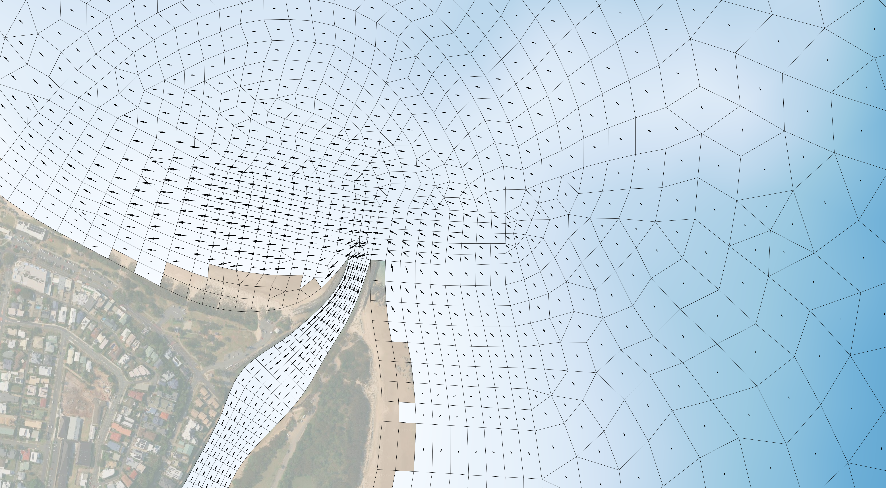
Example (NetCDF mesh output format).
! NetCDF mesh output format
Output == netcdf
Output Parameters == h, d, v ! Water level (mRL or ft), depth (m or ft), velocity (m/s of ft/s)
Output Interval == 900. ! (s)
End OutputExample (XMDF mesh output format).
! XMDF mesh output format
Output == xmdf
Output Parameters == h, d, v ! Water level (mRL or ft), depth (m or ft), velocity (m/s of ft/s)
Output Interval == 900. ! (s)
End Output5.18.3.1 Statistics
The Output Statistics output block command outputs tracked minimum and maximum statistics over the duration of a simulation at a user specified interval set using the Output Statistics dt output block command. A comparison of NetCDF mesh velocity output at a timestep (left) and maximum of all timesteps (right) is shown in Figure 5.24.
More advanced statistical analysis is available via the TUFLOW FV Python Toolbox and TUFLOW FV MATLAB Toolbox.
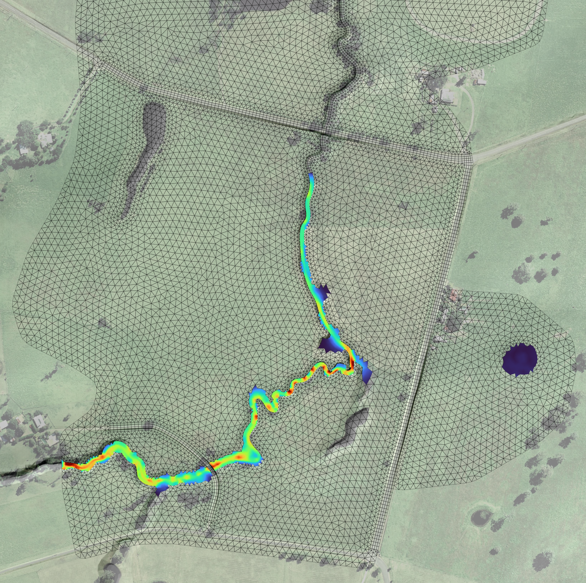
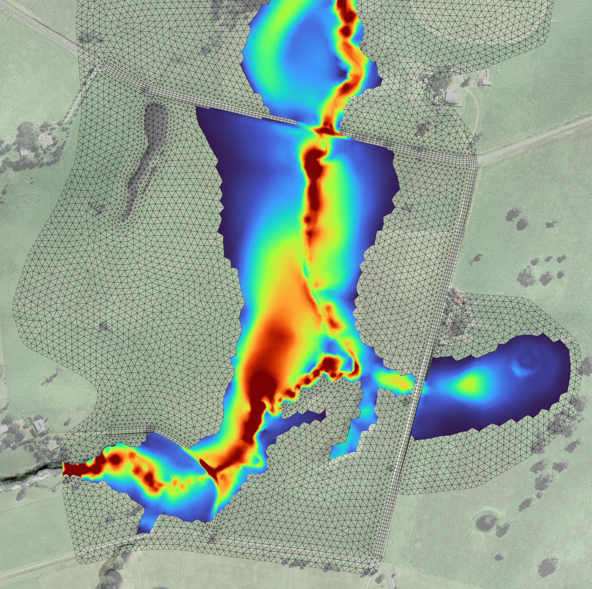
Example (NetCDF mesh output format with statistics).
! Mesh statistics output
Output == netcdf
Output Parameters == h, d, v ! Water level (mRL or ft), depth (m or ft), velocity (m/s of ft/s)
Output Interval == 900. ! (s)
Output Statistics == min, max ! Track min/max
Output Statistics dt == 1 ! (s) stat timestep
End OutputExample (XMDF mesh output format with statistics).
! Mesh statistics output
Output == xmdf
Output Parameters == h, d, v ! Water level (mRL or ft), depth (m or ft), velocity (m/s of ft/s)
Output Interval == 900. ! (s)
Output Statistics == min, max ! Track min/max
Output Statistics dt == 1 ! (s) stat timestep
End Output5.18.4 Point
The point output type generates comma delimited text file (.csv) timeseries at discrete cell centre locations. One or more points may be reported within a single simulation.
Output .csv files are written to the Output Dir (Section 5.18.2.2) and use the naming convention <fvc_name>_POINTS.csv. For example, the simulation file CC_001.fvc will produce point output as CC_001_POINTS.csv.
Output point locations are defined using GIS layers read by the Read GIS PO command. This command reads 3d_po_ layers and empty template layers are generated during model initialisation (Section 5.2). Each 3d_po_ point must include a populated Label attribute as described in Table 5.78. Figure 5.25 shows output point locations from two example 3d_po_ layers. Yellow points represent offshore ADCP monitoring sites and red points indicate onshore meteorological logger locations.
| Attribute Name(s) | Description | Type |
|---|---|---|
Type |
Reserved for future use (Not used) |
Character |
Label |
Name of the point. |
Character |
Comment |
Optional user comment. |
Character |
Vert_min |
3D Vertical averaging override. Not applicable to the 2D HD simulation class. |
Float |
Ver_max |
3D Vertical averaging override. Not applicable to the 2D HD simulation class. |
Float |
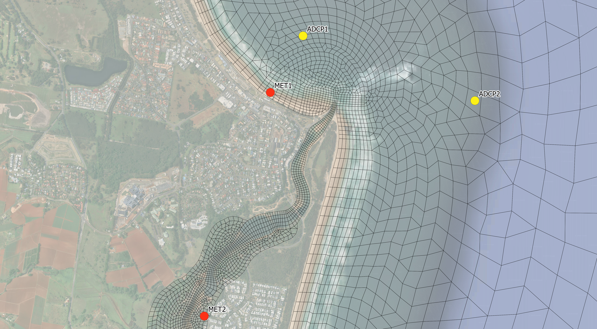
The point output type is specified by setting the first argument in the output block to points. Configuration requires specifying the output interval and the desired output parameters. Supported output parameters and their units are provided in Table 5.76.
Two examples output blocks are shown below. The first reports water level, depth and velocity at the ADCP points, resulting in the output shown in Figure 5.26. The second reports wind speed and mean sea level pressure at the meteorological logger points, resulting in the output shown in Figure 5.27.
! ADCP Calibration Points
Output == Points ! CSV timeseries at each output point
Read GIS PO == ..\model\gis\3d_po_ACDPs_001_P.shp ! Point locations
Output Parameters == h, d, v ! Water level (mRL or ft), depth (m or ft), velocity (m/s of ft/s)
Output Interval == 900. ! (s)
End Output! Meteorological Boundary Comparisons To Measurements
Output == Points ! CSV timeseries at each output point
Read GIS PO == ..\model\gis\3d_po_MetObs_001_P.shp ! Point locations
Output Parameters == W10, MSLP ! Wind speed (m/s), mean sea level pressure (hPa)
Output Interval == 3600. ! (s)
Suffix == MET ! Appends _MET to output to avoid overwrite of HD outputs
End Output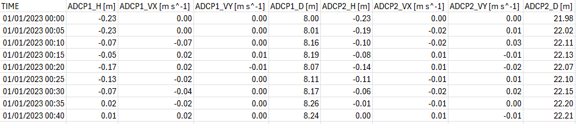

5.18.5 Polyline
The polyline output type (also referred to as flux output) generates comma delimited (.csv) timeseries of net flow across each nodestring feature in the model. This includes nodestrings associated with open boundary definition, hydraulic structure connections and user defined monitoring locations.
Output files are written to the Output Dir (Section 5.18.2.2) and follow the naming convention <fvc_name>_FLUX.csv. For example, the simulation file CC_001.fvc will produce CC_001_FLUX.csv.
Polyline output locations (Figure 5.28) are defined using the Read GIS Nodestring command which reads 2d_ns_layers. Digitising flow monitoring polylines uses the same approach as nodestring structure connection types (Section 5.17.2.2.1). For correct sign convention polylines should be digitised from right to left when looking in the downstream direction.
Polyline timeseries output is specified by setting Output == Flux on the first line of the output block (Example provided below). No output parameters are required. The output variable (see Table 5.79) is fixed to net flow and cannot be modified.
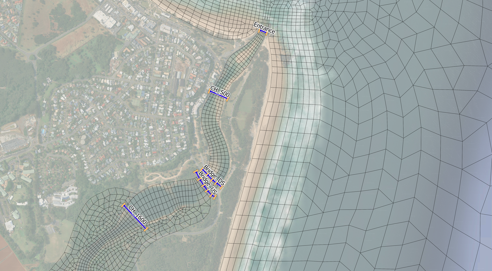
| Output | Description | Units (Metric, US Customary) |
|---|---|---|
FLOW |
Net flow across the nodestring. |
m3/s, ft3/s |
! Location of Flux Polylines
Read GIS Nodestring == ..\model\gis\2d_ns_Monitoring_001_L.shp
! Output Flux Cross/Long Sections
Output == Flux ! Net flux across each nodestring
Output Interval == 300. ! (s)
End Output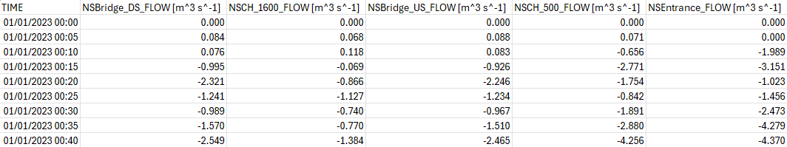
5.18.6 Structure
The structure output type (also referred to as structflux output) generates comma delimited (.csv) timeseries of flow (in units of \(m^3/s\) or \(ft^3/s\)) through hydraulic structures.
Output files are written to the Output Dir (Section 5.18.2.2) and follow the naming convention
If the Name structure block command is populated the csv output column will use the name as a label. Otherwise the column header will be labelled STRUCTURE_N_FLOW where N is the order that the structure block appears in the .fvc file. For example, STRUCTURE_1_FLOW is the first structure block encounter in the .fvc file as shown in Figure 5.30.
There is no need to specify output parameters for structflux output, all relevant outputs are automatically generated (see Table 5.80).
| Output | Description | Units (Metric, US Customary) |
|---|---|---|
FLOW |
Flow through the structure. |
m3/s, ft3/s |
! Structure flux output
Output == structflux
Output Interval == 300. ! (s)
End Output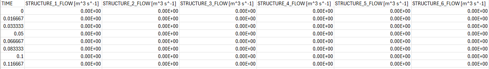
5.18.7 Mass Balance
Mass balance output generates comma delimited (.csv) time series of accumulated fluxes and balance diagnostics for each simulated quantity for commonly used boundary conditions. These outputs are useful for checking domain scale conservation and understanding system turnover dynamics. Mass balance output is not supported when using the Cartesian (US Customary Units) coordinate reference frame implementation.
Output files are written to the Output Dir (Section 5.18.2.2) using the naming convention <fvc_name>_MASSBALANCE_<quantity_name>.csv. For example, the volume balance file for River_001.fvc is River_001_MASSBALANCE_VOLUME.csv.
There is no need to specify output parameters for mass balance output. The key outputs reported for each quantity are summarised in Table B.6.
! Accumulated volume and mass balance
Output == massbalance
Output Interval == 900. ! (s)
End OutputOutput csv header code definitions, units and interpretation guidance are provided in Section B.11.1.
5.18.8 Mass
Mass output tracks the water volume, mass and potential energy in the model. There is no need to specify output parameters for mass output. Mass output is not supported when using the Cartesian (US Customary Units) coordinate reference frame implementation.
| Output | Description | Units (Metric only) |
|---|---|---|
Volume |
Total water volume in the model. |
m3 |
Water Mass |
Total water mass in the model. |
tonnes |
Potential Energy |
Total potential energy in the model. |
GJ |
! Global volume tracking
Output == mass
Output Interval == 900. ! (s)
End Output5.18.9 Transport File
Transport files are generated from an existing 2D TUFLOW FV simulation as model output. The file stores hydrodynamic state variables and may subsequently be read in a new simulation to provide prescribed hydrodynamic forcing.
Transport output stores cell volume (depth) and depth averaged momentum components (X-momentum and Y-momentum) at a user defined interval. These fields may later be read using a Transport boundary condition within an Advection Dispersion simulation (see Section 7.11.10).
This workflow is commonly applied where multiple tracer, sediment transport, particle tracking or water quality scenarios are run using identical hydrodynamic conditions.
! Output Transport HD file
Output == Transport
Output Interval == 900. ! (s)
End Output5.18.10 Restart File
Restart files are written from a 2D HD simulation to store the hydrodynamic state variables required to resume a 2D HD simulation. The file may subsequently be read by a new simulation to initialise water level, depth and momentum fields, enabling continuation of a previous run or staged model workflows. The reading of restart files as initial conditions is described in Section 5.15.5.
Restart files are written using standalone restart commands. Unlike other model outputs, restart files are not configured within an Output Block.
The standalone restart commands are listed in Table 5.82.
| Command | Description |
|---|---|
Optional - Writes a restart file (.rst) to the log directory location at the time interval specified. |
|
Optional - Writes a restart file (.rst) at a user requested time specified in HOURS or ISODATE format. |
|
Optional - Switch to overwrite the restart file at the time interval specified using the Write Restart dt command or create a series of restart files for each timestep: |
The example below specifies periodic writing of restart data.
! Write Restart File
Write Restart dt == 24.0 ! Interval (hours) for writing restart data
Restart Overwrite == 1 ! Enable overwrite mode (1: overwrite, 0: don't overwrite)Write Restart dt specifies the interval in hours at which restart data are written. Restart Overwrite controls whether successive restart files overwrite the previous file or are written as separate files. If overwrite mode is enabled only a single restart file representing the most recent write time is retained. If disabled, a restart file is written at each specified interval.
The examples below demonstrate writing a requested restart file at a specific time using the Write Restart At Time command in ISODATE and HOURS Time Format.
Example (ISODATE).
! Write Restart File at Specific Time
Write Restart At Time == 01/05/2011 00:15:00 ! ISODATE formatExample (HOURS).
! Write Restart File at Specific Time (hours)
Write Restart At Time == 0.5 ! HOURS format - 30 minutes from simulation start5.18.11 Checks and Logs
Several diagnostic style outputs are produced by TUFLOW FV to assist in debugging and simulation optimisation.
5.18.11.1 Check Files
Check files are written when the Write Check Files command is issued with a folder path argument.
Write Check Files == ..\check ! Directory for GIS check filesThese files are GIS vector files and summarise the mesh, nodestings, boundary conditions, z line and sa inputs. One file is produced for each and presents the sum total of all specifications or manipulations applied to a simulation across one to many commands. For example, a boundary condition check file will show all the locations of boundary conditions in one file, irrespective of how many BC block commands have been issued.
Check files are described, and their attributed explained, within a dedicated TUFLOW FV Wiki page.
5.18.11.2 Log File
A log file is written when the Log Dir command is issued with a folder path argument. The interval that the log file is updated during a simulation can be configured using the Screen/Log Display Interval.
Log Dir == log ! Log and diagnostics directory
Screen/Log Display Interval == 300. ! {300.} log_dt (s)This file echoes the .fvc and provides error messaging, timestep related information and other diagnostic data. This file is therefore important for identifying data input issues and troubleshooting the model.
5.18.11.3 Timestep Files
Files that describe the overall CFL behaviour of each cell face are written at the end of each simulation, in the same location as the log file. These are useful in quickly identifying which cell faces (if any) are potentially unnecessarily slowing down simulations (i.e. are reducing the overall simulation timestep to meet CFL conditions, see Section 5.7 and Section B.4.5). These often occur in locations with small cells that may have been accidentally built. One csv file is produced for each of the internal and external CFL performance, and average and minimum timestep information for each cell face is provided. Faces that are constraining the timestep can be easily identified by sorting the output csvs in a spreadsheet application - the smallest timesteps will be at the top (or bottom) of the sorted list, alongside the corresponding cell face ID and geospatial coordinates.
Guidance on interrogating these files is provided within a dedicated TUFLOW FV Wiki page.